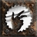

 Meditation 2.38% (1.0)
Popular builds include:
43% of all Paladins favor FoH
21% of all Paladins are Hammerdins
More detailed breakdown:
21.21% of Paladin's invest heavily in Blessed Hammer, Blessed Aim, Vigor, Concentration, Holy Shield
18.18% of Paladin's invest heavily in Holy Bolt, Fist of the Heavens, Sanctuary, Holy Shock, Holy Shield
14.65% of Paladin's invest heavily in Holy Bolt, Fist of the Heavens, Holy Shock, Holy Shield, Conviction
12.12% of Paladin's invest heavily in Smite, Holy Shield, Fanaticism, Defiance, Dashing Strike
9.60% of Paladin's invest heavily in Sanctuary, Fist of the Heavens, Holy Bolt, Holy Shield, Conviction
5.56% of Paladin's invest heavily in Salvation, Resist Lightning, Holy Shock, Resist Fire, Zeal
5.05% of Paladin's invest heavily in Sanctuary, Cleansing, Holy Bolt, Dashing Strike, Fist of the Heavens
4.55% of Paladin's invest heavily in Salvation, Conviction, Holy Shield, Resist Lightning, Resist Fire
4.55% of Paladin's invest heavily in Salvation, Holy Freeze, Vigor, Resist Cold, Charge
2.02% of Paladin's invest heavily in Might, Charge, Vigor, Fanaticism, Blessed Hammer
1.52% of Paladin's invest heavily in Sacrifice, Zeal, Holy Shield, Fanaticism, Smite
1.01% of Paladin's invest heavily in Vengeance, Resist Cold, Resist Fire, Resist Lightning, Salvation
Skills: Zeal:20, Blessed Hammer:20, Blessed Aim:20, Vigor:20, Sacrifice:15, Smite:1, Holy Bolt:1, Charge:1, Holy Shield:1, Dashing Strike:1, Might:1, Prayer:1, Defiance:1, Cleansing:1, Salvation:1
Equipment: gloves: Laying of Hands x1, ring: Beast Gyre x1, ring: Bul-Kathos' Wedding Band x1, body: Chains of Honor x1, helmet: Andariel's Visage x1, belt: String of Ears x1, boots: Gore Rider x1, amulet: Seraph's Hymn x1, Left hand: Spirit x1, Left hand: Grief x1, Offhand: Medusa's Gaze x1, Offhand: Herald of Zakarum x1
Mercenary: Act 2 Desert Mercenary - Steel Shade, Leviathan, The Reaper's Toll
Skills: Blessed Hammer:20, Holy Shield:20, Blessed Aim:20, Vigor:20, Defiance:17, Smite:1, Holy Bolt:1, Charge:1, Might:1, Prayer:1, Cleansing:1, Redemption:1, Salvation:1
Equipment: boots: Shadow Dancer x1, Offhand: Spirit x1
Mercenary: Act 2 Desert Mercenary - No equipment
Skills: Blessed Hammer:20, Blessed Aim:20, Concentration:20, Vigor:20, Holy Shield:16, Smite:1, Holy Bolt:1, Charge:1, Dashing Strike:1, Might:1, Prayer:1, Defiance:1, Cleansing:1, Redemption:1
Equipment: boots: War Traveler x1, body: Skullder's Ire x1, ring: Chaos Master x1, ring: Dread Turn x1, Left hand: Spirit x1, Offhand: Herald of Zakarum x1
Mercenary: Act 2 Desert Mercenary - Duriel's Shell
Skills: Blessed Hammer:20, Blessed Aim:20, Concentration:20, Vigor:20, Holy Shield:14, Smite:1, Holy Bolt:1, Charge:1, Dashing Strike:1, Might:1, Prayer:1, Defiance:1, Cleansing:1, Redemption:1
Equipment: ring: Shadow Coil x1, ring: Bul-Kathos' Wedding Band x1, amulet: Mara's Kaleidoscope x1, belt: Trang-Oul's Girth x1, boots: War Traveler x1, gloves: Magefist x1, body: Enigma x1, helmet: Harlequin Crest x1, Left hand: Call to Arms x1, Left hand: Heart of the Oak x1, Offhand: Medusa's Gaze x1, Offhand: Herald of Zakarum x1
Mercenary: Act 2 Desert Mercenary - The Gladiator's Bane, Tal Rasha's Horadric Crest, Insight
Skills: Blessed Hammer:20, Blessed Aim:20, Concentration:20, Vigor:20, Holy Shield:13, Smite:1, Holy Bolt:1, Charge:1, Might:1, Prayer:1, Defiance:1, Cleansing:1
Equipment: boots: Silkweave x1, helmet: Harlequin Crest x1, body: Enigma x1, gloves: Magefist x1, ring: Havoc Hold x1, ring: Shadow Band x1, amulet: Eagle Collar x1, belt: Arachnid Mesh x1, Left hand: Call to Arms x1, Left hand: Heart of the Oak x1, Offhand: Kurast Shield x1, Offhand: Herald of Zakarum x1
Mercenary: Act 2 Desert Mercenary - Treachery, Steel Shade, Insight
Skills: Blessed Hammer:20, Blessed Aim:20, Concentration:20, Vigor:20, Holy Shield:14, Smite:1, Holy Bolt:1, Charge:1, Dashing Strike:1, Might:1, Prayer:1, Defiance:1, Cleansing:1, Redemption:1
Equipment: helmet: Harlequin Crest x1, ring: Bone Hold x1, ring: Nagelring x1, amulet: PlagueRI Torc x1, body: Skin of the Vipermagi x1, gloves: Chance Guards x1, boots: Sandstorm Trek x1, belt: Verdungo's Hearty Cord x1, Left hand: War Staff of Teleportation x1, Left hand: Heart of the Oak x1, Offhand: Spirit x1
Mercenary: Act 2 Desert Mercenary - Duriel's Shell, Crown of Thieves, Insight
Skills: Blessed Hammer:20, Blessed Aim:20, Concentration:20, Vigor:20, Holy Shield:14, Redemption:2, Smite:1, Holy Bolt:1, Charge:1, Might:1, Prayer:1, Defiance:1, Cleansing:1
Equipment: amulet: Rose Branded Amulet of the Giant x1, Offhand: Spirit x1
Mercenary: Act 1 Rogue Scout - No equipment
Skills: Blessed Hammer:20, Blessed Aim:20, Concentration:20, Vigor:20, Holy Shield:14, Smite:1, Holy Bolt:1, Charge:1, Dashing Strike:1, Might:1, Fanaticism:1, Prayer:1, Defiance:1, Cleansing:1
Equipment: ring: Dread Knot x1, ring: Fortuitous Ring of Fortune x1, body: Enigma x1, helmet: Harlequin Crest x1, gloves: Chance Guards x1, belt: Thundergod's Vigor x1, amulet: Priest's Amulet of Luck x1, boots: Skull Slippers x1, Left hand: Astreon's Iron Ward x1, Left hand: Wizardspike x1, Offhand: Spirit x2
Mercenary: Act 2 Desert Mercenary - Treachery, Tal Rasha's Horadric Crest, Insight
Skills: Blessed Hammer:20, Holy Shield:20, Blessed Aim:20, Vigor:20, Concentration:15, Smite:1, Holy Bolt:1, Charge:1, Might:1, Prayer:1, Defiance:1, Cleansing:1, Redemption:1
Equipment: ring: Grim Touch x1, ring: Dread Loop x1, boots: Brimstone Track x1, gloves: Trang-Oul's Claws x1, helmet: Pain Casque x1, amulet: The Cat's Eye x1, Left hand: Holy Thunder x1
Mercenary: Act 3 Eastern Sorceror - Duriel's Shell, Crown of Ages, Spirit, Stormshield
Skills: Blessed Hammer:20, Blessed Aim:20, Concentration:20, Vigor:20, Holy Shield:15, Smite:1, Holy Bolt:1, Charge:1, Might:1, Prayer:1, Defiance:1, Cleansing:1, Redemption:1
Equipment: gloves: Magefist x1, helmet: Harlequin Crest x1, boots: Natalya's Soul x1, body: Enigma x1, amulet: Mara's Kaleidoscope x1, Left hand: Blade of Ali Baba x1, Left hand: Heart of the Oak x1, Offhand: Spirit x1, Offhand: Herald of Zakarum x1, ring: Raven Frost x1, ring: Dwarf Star x1, belt: Thundergod's Vigor x1
Mercenary: Act 1 Rogue Scout - Crown of Thieves, Guardian Angel, Harmony
Skills: Blessed Hammer:20, Blessed Aim:20, Concentration:20, Vigor:20, Holy Shield:12, Smite:1, Holy Bolt:1, Charge:1, Dashing Strike:1, Might:1, Prayer:1, Defiance:1, Cleansing:1, Redemption:1, Salvation:1
Equipment: amulet: Rose Branded Amulet x1, ring: Raven Frost x1, ring: Dwarf Star x1, belt: Dire Lash x1, body: Enigma x1, gloves: Chance Guards x1, helmet: Skull Shell x1, boots: Aldur's Advance x1, Left hand: Call to Arms x1, Left hand: Heart of the Oak x1, Offhand: Medusa's Gaze x1, Offhand: Spirit x1
Mercenary: Act 3 Eastern Sorceror - Treachery, Giant Skull, Lawbringer, Spirit
Skills: Blessed Hammer:20, Blessed Aim:20, Concentration:20, Vigor:20, Holy Shield:10, Sacrifice:1, Smite:1, Holy Bolt:1, Zeal:1, Charge:1, Dashing Strike:1, Might:1, Fanaticism:1, Prayer:1, Defiance:1, Cleansing:1, Redemption:1
Equipment: belt: String of Ears x1, amulet: Mara's Kaleidoscope x1, helmet: Harlequin Crest x1, boots: Cow King's Hooves x1, gloves: Magefist x1, body: Skin of the Vipermagi x1, ring: Raven Frost x1, ring: Eagle Touch x1, Left hand: Call to Arms x1, Left hand: Heart of the Oak x1, Offhand: Spirit x2
Mercenary: Act 2 Desert Mercenary - Andariel's Visage, Treachery, The Reaper's Toll
Skills: Blessed Hammer:20, Blessed Aim:20, Concentration:20, Vigor:20, Holy Shield:12, Smite:1, Holy Bolt:1, Charge:1, Dashing Strike:1, Might:1, Fanaticism:1, Prayer:1, Defiance:1, Cleansing:1, Redemption:1
Equipment: Left hand: Edge x1
Mercenary: Act 2 Desert Mercenary - No equipment
Skills: Blessed Hammer:20, Blessed Aim:20, Concentration:20, Vigor:20, Holy Shield:8, Sacrifice:1, Smite:1, Holy Bolt:1, Zeal:1, Charge:1, Might:1, Prayer:1, Defiance:1, Cleansing:1, Meditation:1, Redemption:1
Equipment: belt: Arachnid Mesh x1, boots: Gore Rider x1, gloves: Magefist x1, Offhand: Spirit x1, Left hand: Astreon's Iron Ward x1
Mercenary: Act 1 Rogue Scout - Griswold's Heart, Steel Shade, Insight
Skills: Blessed Hammer:20, Blessed Aim:20, Concentration:20, Vigor:20, Holy Shield:11, Smite:1, Holy Bolt:1, Charge:1, Dashing Strike:1, Might:1, Prayer:1, Defiance:1, Cleansing:1, Redemption:1, Salvation:1
Equipment: amulet: PlagueRI Eye x1, boots: Aldur's Advance x1, ring: Entropy Knot x1, ring: Raven Frost x1, Left hand: Wizardspike x1, Left hand: Heart of the Oak x1, Offhand: Ancients' Pledge x1, Offhand: Herald of Zakarum x1, belt: Arachnid Mesh x1, helmet: Hailstone Horn x1, body: Skin of the Vipermagi x1, gloves: Magefist x1
Mercenary: Act 2 Desert Mercenary - No equipment
Skills: Blessed Hammer:20, Holy Shield:20, Blessed Aim:20, Concentration:20, Vigor:14, Smite:1, Holy Bolt:1, Charge:1, Might:1, Prayer:1, Defiance:1, Cleansing:1
Equipment: amulet: Beast Torc x1, boots: Tearhaunch x1, ring: Raven Frost x1, ring: Dwarf Star x1, body: Guardian Angel x1, belt: Verdungo's Hearty Cord x1, helmet: Sazabi's Mental Sheath x1, gloves: Chance Guards x1, Left hand: Spirit x1, Offhand: Spirit x1
Mercenary: Act 2 Desert Mercenary - Treachery, Stealskull, Bonehew
Skills: Blessed Hammer:20, Blessed Aim:20, Concentration:20, Vigor:20, Holy Bolt:5, Sacrifice:1, Smite:1, Zeal:1, Charge:1, Vengeance:1, Absolution:1, Holy Shield:1, Fist of the Heavens:1, Might:1, Holy Fire:1, Precision:1, Holy Freeze:1, Sanctuary:1, Prayer:1, Defiance:1, Cleansing:1
Equipment: belt: Verdungo's Hearty Cord x1, ring: Raven Frost x1, ring: GhoulRI Master x1, gloves: Magefist x1, boots: Sander's Riprap x1, body: Skin of the Vipermagi x1, Offhand: Spirit x1, Offhand: Herald of Zakarum x1
Mercenary: Act 2 Desert Mercenary - Shaftstop, Andariel's Visage, Insight
Skills: Blessed Hammer:20, Blessed Aim:20, Concentration:20, Vigor:20, Holy Shield:10, Smite:1, Holy Bolt:1, Charge:1, Might:1, Prayer:1, Resist Fire:1, Defiance:1, Cleansing:1, Redemption:1
Equipment: ring: Grim Loop x1, ring: Eagle Touch x1, boots: Cow King's Hooves x1, gloves: Shadow Grip x1, amulet: Priest's Amulet x1, helmet: Harlequin Crest x1, belt: Goldwrap x1, body: Skin of the Vipermagi x1, Left hand: Spirit x1, Offhand: Spirit x1
Mercenary: Act 2 Desert Mercenary - Treachery, Steel Shade, Insight
Skills: Blessed Hammer:20, Blessed Aim:20, Concentration:20, Vigor:20, Holy Shield:7, Smite:1, Holy Bolt:1, Charge:1, Dashing Strike:1, Might:1, Prayer:1, Resist Fire:1, Defiance:1, Cleansing:1, Redemption:1, Salvation:1
Equipment: amulet: Order Noose x1, gloves: Magefist x1, body: Guardian Angel x1, ring: Blood Turn x1, ring: Wraithra Grip x1, helmet: Beast Shell x1, belt: Credendum x1, Left hand: The Dragon Chang x1, Left hand: Spirit x1, boots: Natalya's Soul x1, Offhand: Spirit x1
Mercenary: Act 2 Desert Mercenary - The Gladiator's Bane, Obedience
Skills: Blessed Hammer:20, Blessed Aim:20, Concentration:20, Vigor:20, Holy Shield:10, Smite:1, Holy Bolt:1, Charge:1, Dashing Strike:1, Might:1, Fanaticism:1, Prayer:1, Defiance:1, Cleansing:1, Redemption:1, Salvation:1
Equipment: ring: Eagle Band x1, ring: Wraithra Grasp x1, boots: Aldur's Advance x1, body: Skin of the Vipermagi x1, amulet: Highlord's Wrath x1, helmet: Dread Hood x1, gloves: Trang-Oul's Claws x1, belt: Arachnid Mesh x1, Left hand: Wizardspike x1, Left hand: Spirit x1, Offhand: Medusa's Gaze x1, Offhand: Spirit x1
Mercenary: Act 2 Desert Mercenary - Treachery, Steel Shade, Insight
Skills: Blessed Hammer:20, Blessed Aim:20, Conviction:20, Holy Shield:11, Sacrifice:8, Smite:4, Zeal:4, Holy Bolt:1, Charge:1, Might:1, Holy Fire:1, Precision:1, Holy Freeze:1, Sanctuary:1, Prayer:1, Defiance:1, Cleansing:1, Vigor:1, Redemption:1, Salvation:1
Equipment: gloves: Dracul's Grasp x1, boots: Gore Rider x1, amulet: Highlord's Wrath x1, belt: Thundergod's Vigor x1, body: Chains of Honor x1, ring: Skull Hold x1, ring: Raven Frost x1, helmet: Guillaume's Face x1, Left hand: Call to Arms x1, Left hand: Grief x1, Offhand: Spirit x1, Offhand: Herald of Zakarum x1
Mercenary: Act 3 Eastern Sorceror - No equipment
Skills: Blessed Hammer:20, Fist of the Heavens:20, Concentration:20, Vigor:20, Holy Bolt:7, Sacrifice:1, Smite:1, Zeal:1, Charge:1, Vengeance:1, Absolution:1, Holy Shield:1, Might:1, Blessed Aim:1, Prayer:1, Defiance:1, Cleansing:1, Redemption:1
Equipment: ring: Chaos Grip x1, gloves: Magefist x1, boots: Tearhaunch x1, Offhand: Spirit x2
Mercenary: Act 2 Desert Mercenary - No equipment
Skills: Blessed Hammer:20, Blessed Aim:20, Concentration:20, Vigor:20, Salvation:5, Smite:1, Holy Bolt:1, Charge:1, Holy Shield:1, Might:1, Prayer:1, Defiance:1, Cleansing:1, Redemption:1
Equipment: Left hand: Charged Battle Staff of Teleportation x1, amulet: Seraph's Hymn x1
Mercenary: Act 2 Desert Mercenary - No equipment
Skills: Blessed Hammer:20, Blessed Aim:20, Concentration:20, Vigor:20, Holy Shield:6, Smite:1, Holy Bolt:1, Charge:1, Might:1, Holy Fire:1, Precision:1, Holy Freeze:1, Sanctuary:1, Conviction:1, Prayer:1, Defiance:1, Cleansing:1, Redemption:1, Salvation:1
Equipment: ring: The Stone of Jordan x1, ring: Blood Hold x1, boots: Blood Spur x1, gloves: Magefist x1, body: Skin of the Vipermagi x1, helmet: Harlequin Crest x1, belt: Goldwrap x1, amulet: Chaos Scarab x1, Left hand: Spirit x1, Offhand: Herald of Zakarum x1
Mercenary: Act 2 Desert Mercenary - Tal Rasha's Horadric Crest, M'avina's Embrace, Insight
Skills: Blessed Hammer:20, Holy Shield:20, Blessed Aim:20, Vigor:20, Zeal:11, Sacrifice:1, Smite:1, Holy Bolt:1, Charge:1, Might:1, Prayer:1, Defiance:1, Cleansing:1, Redemption:1
Equipment: helmet: Griswold's Valor x1, amulet: Raven Mark x1, body: Skin of the Vipermagi x1, belt: Arachnid Mesh x1, Offhand: Spirit x1
Mercenary: Act 2 Desert Mercenary - No equipment
Skills: Blessed Hammer:20, Blessed Aim:20, Concentration:20, Vigor:20, Holy Shield:11, Smite:1, Holy Bolt:1, Charge:1, Dashing Strike:1, Might:1, Prayer:1, Defiance:1, Cleansing:1, Redemption:1
Equipment: amulet: Rose Branded Amulet of Tornado x1, ring: Nagelring x1, ring: Raven Frost x1, Left hand: Ruby War Staff of Teleportation x1, Offhand: Spirit x1
Mercenary: Act 1 Rogue Scout - No equipment
Skills: Blessed Hammer:20, Blessed Aim:20, Concentration:20, Vigor:20, Holy Shield:7, Sacrifice:1, Smite:1, Holy Bolt:1, Zeal:1, Charge:1, Dashing Strike:1, Might:1, Fanaticism:1, Prayer:1, Defiance:1, Cleansing:1, Redemption:1
Equipment: ring: Havoc Knot x1, ring: Death Grip x1, body: Goldskin x1, amulet: Viper Emblem x1, belt: Arachnid Mesh x1, gloves: Magefist x1, helmet: Raven Hood x1, boots: Imp Greaves x1, Left hand: Demon Limb x1, Left hand: Spirit x1, Offhand: Herald of Zakarum x1, Offhand: Spirit x1
Mercenary: Act 2 Desert Mercenary - Guillaume's Face, Archon Plate, Insight
Skills: Blessed Hammer:20, Blessed Aim:20, Concentration:20, Vigor:20, Holy Shield:12, Smite:1, Holy Bolt:1, Charge:1, Might:1, Prayer:1, Defiance:1, Cleansing:1
Equipment: gloves: Trang-Oul's Claws x1, boots: Aldur's Advance x1, belt: Tal Rasha's Fine-Spun Cloth x1, amulet: Hawk Branded Amulet of the Vampire x1, helmet: Tal Rasha's Horadric Crest x1, Left hand: Flail x1, Offhand: Targe of Thawing x1, Offhand: Spirit x1
Mercenary: Act 2 Desert Mercenary - No equipment
Skills: Blessed Hammer:20, Blessed Aim:20, Concentration:20, Vigor:20, Holy Shield:7, Sacrifice:1, Smite:1, Holy Bolt:1, Zeal:1, Charge:1, Dashing Strike:1, Might:1, Prayer:1, Defiance:1, Cleansing:1, Redemption:1, Salvation:1
Equipment: ring: Entropy Master x1, ring: Eagle Loop x1, Left hand: Battle Staff of Teleportation x1, Left hand: Spirit x1, boots: Aldur's Advance x1, body: Skin of the Vipermagi x1, amulet: Rune Noose x1, helmet: Stone Hood x1, belt: Arachnid Mesh x1, gloves: Magefist x1, Offhand: Spirit x1
Mercenary: Act 2 Desert Mercenary - Steel Shade, Treachery, Insight
Skills: Blessed Hammer:20, Blessed Aim:20, Concentration:20, Vigor:20, Holy Shield:12, Smite:1, Holy Bolt:1, Charge:1, Might:1, Prayer:1, Defiance:1, Cleansing:1
Equipment: ring: Nagelring x1, ring: Platinum Ring of Fortune x1, helmet: Stealskull x1, amulet: Beast Torc x1, gloves: Chance Guards x1, body: Que-Hegan's Wisdom x1, belt: String of Ears x1, boots: Ruby Light Plated Boots of Luck x1, Left hand: Battle Staff of Teleportation x1, Left hand: Heart of the Oak x1, Offhand: Spirit x1
Mercenary: Act 2 Desert Mercenary - Vampire Gaze, Leviathan, Insight
Skills: Blessed Hammer:20, Blessed Aim:20, Concentration:20, Vigor:20, Holy Shield:10, Smite:1, Holy Bolt:1, Charge:1, Might:1, Prayer:1, Defiance:1, Cleansing:1, Redemption:1
Equipment: body: Skin of the Vipermagi x1, boots: Infernostride x1, amulet: Rose Branded Amulet x1, ring: Manald Heal x1, ring: Raven Frost x1, belt: Arachnid Mesh x1, helmet: Harlequin Crest x1, Left hand: Grim Wand of Lower Resistance x1, Left hand: Heart of the Oak x1, gloves: Trang-Oul's Claws x1, Offhand: Spirit x1
Mercenary: Act 2 Desert Mercenary - The Gladiator's Bane, Tal Rasha's Horadric Crest, Insight
Skills: Blessed Hammer:20, Blessed Aim:20, Concentration:20, Vigor:20, Smite:1, Holy Bolt:1, Charge:1, Holy Shield:1, Might:1, Prayer:1, Defiance:1, Cleansing:1, Resist Lightning:1, Redemption:1
Equipment: gloves: Magefist x1, ring: Beast Band x1, ring: Nagelring x1, belt: Arachnid Mesh x1, amulet: Mara's Kaleidoscope x1, helmet: Harlequin Crest x1, boots: War Traveler x1, body: Enigma x1, Left hand: Call to Arms x1, Left hand: Heart of the Oak x1, Offhand: Lidless Wall x1, Offhand: Spirit x1
Mercenary: Act 2 Desert Mercenary - Steel Shade, Leviathan, Insight
Skills: Blessed Hammer:20, Blessed Aim:20, Concentration:20, Vigor:20, Holy Shield:11, Smite:1, Holy Bolt:1, Charge:1, Dashing Strike:1, Might:1, Prayer:1, Defiance:1, Cleansing:1
Equipment: boots: GhoulRI Nails x1, ring: Bitter Spiral x1, ring: Beast Grasp x1, belt: Arachnid Mesh x1, gloves: Bloodfist x1, body: Enigma x1, amulet: Havoc Talisman x1, helmet: Harlequin Crest x1, Left hand: Call to Arms x1, Left hand: Heart of the Oak x1, Offhand: Spirit x1
Mercenary: Act 2 Desert Mercenary - Andariel's Visage, Skin of the Vipermagi, Insight
Skills: Blessed Hammer:20, Blessed Aim:20, Concentration:20, Vigor:20, Holy Shield:11, Defiance:2, Smite:1, Holy Bolt:1, Charge:1, Might:1, Prayer:1, Cleansing:1
Equipment: belt: Wraithra Clasp x1, amulet: Bitter Scarab x1, ring: Shadow Eye x1, ring: Raven Frost x1, gloves: Magefist x1, helmet: Sazabi's Mental Sheath x1, body: Dark Adherent x1, boots: Tearhaunch x1, Left hand: Spirit x1, Offhand: Spirit x1
Mercenary: Act 2 Desert Mercenary - Tal Rasha's Guardianship, Undead Crown, Insight
Skills: Blessed Hammer:20, Blessed Aim:20, Concentration:20, Vigor:20, Redemption:6, Holy Shield:4, Smite:1, Holy Bolt:1, Charge:1, Dashing Strike:1, Might:1, Prayer:1, Defiance:1, Cleansing:1, Salvation:1
Equipment: amulet: Rose Branded Amulet x1, boots: Glyph Shank x1, ring: Skull Coil x1, gloves: Magefist x1, belt: Credendum x1, helmet: Crown of Ages x1, Left hand: Spirit x1, Offhand: Stormshield x1
Mercenary: Act 1 Rogue Scout - No equipment
Skills: Blessed Hammer:20, Blessed Aim:20, Concentration:20, Vigor:20, Holy Shield:8, Smite:1, Holy Bolt:1, Charge:1, Dashing Strike:1, Might:1, Prayer:1, Defiance:1, Cleansing:1, Redemption:1, Salvation:1
Equipment: belt: Goldwrap x1, amulet: Rose Branded Amulet x1, gloves: Chance Guards x1, ring: Grim Hold x1, ring: Dread Loop x1, boots: Silkweave x1, Left hand: Battle Staff of Teleportation x1, Left hand: Heart of the Oak x1, body: Skin of the Vipermagi x1, helmet: Peasant Crown x1, Offhand: Spirit x1
Mercenary: Act 2 Desert Mercenary - Crown of Thieves, Smoke, Insight
Skills: Blessed Hammer:20, Blessed Aim:20, Concentration:20, Vigor:20, Holy Shield:7, Smite:1, Holy Bolt:1, Charge:1, Might:1, Prayer:1, Defiance:1, Cleansing:1
Equipment: ring: Raven Frost x1, ring: Chaos Turn x1, belt: Verdungo's Hearty Cord x1, boots: Sandstorm Trek x1, amulet: Doom Mark x1, body: Enigma x1, gloves: Magefist x1, helmet: Kira's Guardian x1, Left hand: Call to Arms x1, Left hand: Wizardspike x1, Offhand: Spirit x1, Offhand: Herald of Zakarum x1
Mercenary: Act 2 Desert Mercenary - Duriel's Shell, Andariel's Visage, Insight
Skills: Blessed Hammer:20, Blessed Aim:20, Concentration:20, Vigor:20, Holy Shield:7, Smite:1, Holy Bolt:1, Charge:1, Dashing Strike:1, Might:1, Holy Fire:1, Precision:1, Prayer:1, Defiance:1, Cleansing:1, Salvation:1
Equipment: ring: Ring of the Apprentice x1, ring: Chaos Finger x1, body: Skin of the Vipermagi x1, gloves: Trang-Oul's Claws x1, helmet: Peasant Crown x1, Offhand: Spirit x2, amulet: Rose Branded Amulet of the Sentinel x1, belt: String of Ears x1, boots: Aldur's Advance x1, Left hand: Spirit x1
Mercenary: Act 2 Desert Mercenary - Tal Rasha's Horadric Crest, Treachery, Insight
Skills: Blessed Hammer:20, Blessed Aim:20, Concentration:20, Vigor:20, Holy Shield:9, Smite:1, Holy Bolt:1, Charge:1, Dashing Strike:1, Might:1, Prayer:1, Defiance:1, Cleansing:1, Redemption:1
Equipment: body: Stealth x1, ring: Blood Hold x1, ring: Order Band x1, belt: String of Ears x1, amulet: Rose Branded Amulet of Guarding x1, helmet: Kira's Guardian x1, boots: Dire Tread x1, gloves: Magefist x1, Left hand: Jeweler's War Staff of Teleportation x1, Left hand: Spirit x1, Offhand: Herald of Zakarum x1
Mercenary: Act 2 Desert Mercenary - Tal Rasha's Horadric Crest, Naj's Light Plate, Insight
Skills: Blessed Hammer:20, Blessed Aim:20, Concentration:20, Vigor:20, Holy Shield:8, Smite:1, Holy Bolt:1, Charge:1, Dashing Strike:1, Might:1, Prayer:1, Defiance:1, Cleansing:1, Redemption:1
Equipment: ring: Shadow Loop x1, ring: Bul-Kathos' Wedding Band x1, belt: Brimstone Fringe x1, gloves: Soul Hand x1, boots: Natalya's Soul x1, amulet: Chromatic Amulet x1, body: Skullder's Ire x1, helmet: Priest's Tiara of the Tiger x1, Left hand: Spirit x1, Offhand: Spirit x1
Mercenary: Act 2 Desert Mercenary - Treachery, Natalya's Totem, Insight
Skills: Blessed Hammer:20, Blessed Aim:20, Concentration:20, Vigor:20, Holy Shield:8, Smite:1, Holy Bolt:1, Charge:1, Dashing Strike:1, Might:1, Prayer:1, Defiance:1, Cleansing:1, Redemption:1
Equipment: ring: Entropy Spiral x1, ring: Raven Frost x1, gloves: Magefist x1, belt: Nosferatu's Coil x1, amulet: Rose Branded Amulet of the Whale x1, boots: Aldur's Advance x1, body: Skin of the Vipermagi x1, helmet: Harlequin Crest x1, Left hand: Heart of the Oak x1, Offhand: Spirit x1
Mercenary: Act 2 Desert Mercenary - Leviathan, Tal Rasha's Horadric Crest, Insight
Skills: Blessed Hammer:20, Blessed Aim:20, Concentration:20, Vigor:20, Holy Shield:8, Smite:1, Holy Bolt:1, Charge:1, Dashing Strike:1, Might:1, Prayer:1, Defiance:1, Cleansing:1, Salvation:1
Equipment: helmet: Rose Branded Circlet x1, belt: PlagueRI Lock x1, ring: Bul-Kathos' Wedding Band x1, ring: Beast Grasp x1, amulet: Rose Branded Amulet of Accuracy x1, gloves: Chance Guards x1, Offhand: Spirit x2, boots: Natalya's Soul x1, body: Principle x1, Left hand: Heart of the Oak x1
Mercenary: Act 3 Eastern Sorceror - Dread Visage, Hwanin's Refuge, Shamshir
Skills: Holy Bolt:20, Fist of the Heavens:20, Holy Shock:20, Sanctuary:20, Holy Shield:10, Sacrifice:1, Smite:1, Zeal:1, Charge:1, Vengeance:1, Blessed Hammer:1, Absolution:1, Might:1, Holy Fire:1, Precision:1, Holy Freeze:1, Conviction:1, Prayer:1, Defiance:1, Cleansing:1, Vigor:1, Redemption:1, Salvation:1
Equipment: gloves: Trang-Oul's Claws x1, ring: The Stone of Jordan x1, ring: Bul-Kathos' Wedding Band x1, helmet: Dire Brow x1, belt: Arachnid Mesh x1, amulet: Dread Beads x1, body: Enigma x1, boots: Corpse Track x1, Left hand: Call to Arms x1, Left hand: Hand of Blessed Light x1, Offhand: Medusa's Gaze x1, Offhand: Herald of Zakarum x1
Mercenary: Act 3 Eastern Sorceror - Andariel's Visage, Naj's Light Plate, Plague, Stormshield
Skills: Holy Bolt:20, Fist of the Heavens:20, Holy Shock:20, Sanctuary:20, Holy Shield:7, Sacrifice:1, Smite:1, Zeal:1, Charge:1, Vengeance:1, Blessed Hammer:1, Absolution:1, Might:1, Holy Fire:1, Precision:1, Holy Freeze:1, Conviction:1, Prayer:1, Defiance:1, Cleansing:1, Vigor:1, Redemption:1, Salvation:1
Equipment: gloves: Trang-Oul's Claws x1, amulet: Mara's Kaleidoscope x1, helmet: Harlequin Crest x1, belt: Arachnid Mesh x1, body: Skin of the Vipermagi x1, boots: War Traveler x1, ring: Bul-Kathos' Wedding Band x2, Left hand: Holy Thunder x1, Left hand: Heart of the Oak x1, Offhand: Spirit x2
Mercenary: Act 2 Desert Mercenary - Treachery, Steel Shade, Insight
Skills: Holy Bolt:20, Fist of the Heavens:20, Holy Shock:20, Sanctuary:20, Holy Shield:6, Redemption:3, Sacrifice:1, Smite:1, Zeal:1, Charge:1, Vengeance:1, Blessed Hammer:1, Absolution:1, Might:1, Holy Fire:1, Precision:1, Holy Freeze:1, Conviction:1, Prayer:1, Defiance:1, Cleansing:1, Vigor:1
Equipment: helmet: Harlequin Crest x1, boots: Sandstorm Trek x1, body: Skin of the Vipermagi x1, gloves: Trang-Oul's Claws x1, amulet: Rose Branded Amulet of Remedy x1, ring: Beast Circle x1, ring: Raven Frost x1, Left hand: Heart of the Oak x1, Offhand: Herald of Zakarum x1
Mercenary: Act 2 Desert Mercenary - Shaftstop
Skills: Holy Bolt:20, Fist of the Heavens:20, Holy Shock:20, Sanctuary:20, Holy Shield:5, Sacrifice:1, Smite:1, Zeal:1, Charge:1, Vengeance:1, Blessed Hammer:1, Absolution:1, Dashing Strike:1, Might:1, Holy Fire:1, Precision:1, Holy Freeze:1, Conviction:1, Prayer:1, Defiance:1, Cleansing:1, Vigor:1, Redemption:1, Salvation:1
Equipment: gloves: Trang-Oul's Claws x1, belt: Arachnid Mesh x1, amulet: Rose Branded Amulet x1, ring: Bul-Kathos' Wedding Band x1, ring: PlagueRI Eye x1, boots: Aldur's Advance x1, Left hand: Grand Scepter x1, Left hand: Heart of the Oak x1, Offhand: Spirit x2, body: Enigma x1, helmet: Harlequin Crest x1
Mercenary: Act 2 Desert Mercenary - Treachery, Tal Rasha's Horadric Crest, Doom
Skills: Holy Bolt:20, Fist of the Heavens:20, Holy Shock:20, Sanctuary:20, Holy Shield:6, Sacrifice:1, Smite:1, Zeal:1, Charge:1, Vengeance:1, Blessed Hammer:1, Absolution:1, Dashing Strike:1, Might:1, Holy Fire:1, Precision:1, Holy Freeze:1, Conviction:1, Prayer:1, Defiance:1, Cleansing:1, Vigor:1, Redemption:1
Equipment: ring: Death Coil x1, ring: Corruption Circle x1, gloves: Magefist x1, body: Enigma x1, Left hand: Crystal Sword x1, Left hand: Heart of the Oak x1, belt: Arachnid Mesh x1, boots: Silkweave x1, helmet: Lore x1, amulet: Telling of Beads x1, Offhand: Spirit x1
Mercenary: Act 2 Desert Mercenary - Veil of Steel, Fortitude, Breath of the Dying
Skills: Holy Bolt:20, Fist of the Heavens:20, Holy Shock:20, Sanctuary:14, Conviction:9, Sacrifice:1, Smite:1, Zeal:1, Charge:1, Vengeance:1, Blessed Hammer:1, Absolution:1, Holy Shield:1, Might:1, Holy Fire:1, Precision:1, Blessed Aim:1, Concentration:1, Holy Freeze:1, Fanaticism:1, Prayer:1, Defiance:1, Cleansing:1, Vigor:1, Meditation:1, Redemption:1
Equipment: belt: Arachnid Mesh x1, boots: War Traveler x1, body: Skin of the Vipermagi x1, ring: The Stone of Jordan x2, gloves: Chance Guards x1, helmet: Griffon's Eye x1, amulet: Mara's Kaleidoscope x1, Left hand: Heart of the Oak x1, Offhand: Herald of Zakarum x1
Mercenary: Act 2 Desert Mercenary - Fortitude, Vampire Gaze, Infinity
Skills: Holy Bolt:20, Fist of the Heavens:20, Holy Shock:20, Sanctuary:20, Holy Shield:7, Sacrifice:1, Smite:1, Zeal:1, Charge:1, Vengeance:1, Blessed Hammer:1, Absolution:1, Might:1, Holy Fire:1, Precision:1, Holy Freeze:1, Prayer:1, Defiance:1, Cleansing:1, Vigor:1, Redemption:1
Equipment: ring: Shadow Grasp x1, amulet: Marshal's Amulet of Chain Lightning x1, Left hand: Gull x1, Offhand: Spirit x2, helmet: Beast Shell x1
Mercenary: Act 2 Desert Mercenary - Tomb Reaver
Skills: Holy Bolt:20, Fist of the Heavens:20, Holy Shock:20, Sanctuary:20, Holy Shield:2, Sacrifice:1, Smite:1, Zeal:1, Charge:1, Vengeance:1, Blessed Hammer:1, Absolution:1, Might:1, Holy Fire:1, Precision:1, Holy Freeze:1, Prayer:1, Defiance:1, Cleansing:1, Vigor:1, Redemption:1
Equipment: gloves: Trang-Oul's Claws x1, amulet: Mara's Kaleidoscope x1, belt: Arachnid Mesh x1, body: Enigma x1, ring: Bul-Kathos' Wedding Band x1, ring: GhoulRI Touch x1, boots: War Traveler x1, helmet: Harlequin Crest x1, Left hand: Heart of the Oak x1, Offhand: Spirit x1
Mercenary: Act 2 Desert Mercenary - Treachery, Spirit Brow, Insight
Skills: Holy Bolt:20, Fist of the Heavens:20, Holy Shock:20, Sanctuary:20, Holy Shield:2, Sacrifice:1, Smite:1, Zeal:1, Charge:1, Vengeance:1, Blessed Hammer:1, Absolution:1, Might:1, Holy Fire:1, Precision:1, Blessed Aim:1, Holy Freeze:1, Conviction:1, Prayer:1, Defiance:1, Cleansing:1, Vigor:1, Redemption:1
Equipment: belt: String of Ears x1, boots: Imp Greaves x1, body: Skin of the Vipermagi x1, helmet: Harlequin Crest x1, amulet: Mara's Kaleidoscope x1, ring: Stone Whorl x1, ring: Corruption Band x1, gloves: Chance Guards x1, Left hand: Spirit x1, Offhand: Spirit x1
Mercenary: Act 2 Desert Mercenary - Raven Cloak, Veil of Steel, Blackleach Blade
Skills: Holy Bolt:20, Fist of the Heavens:20, Holy Shock:20, Sanctuary:20, Holy Shield:3, Sacrifice:1, Smite:1, Zeal:1, Charge:1, Vengeance:1, Blessed Hammer:1, Absolution:1, Dashing Strike:1, Might:1, Holy Fire:1, Precision:1, Holy Freeze:1, Conviction:1, Prayer:1, Defiance:1, Cleansing:1, Vigor:1, Redemption:1, Salvation:1
Equipment: ring: Raven Frost x1, ring: Raven Spiral x1, helmet: Lore x1, body: Skin of the Vipermagi x1, boots: Sandstorm Trek x1, Left hand: Naj's Puzzler x1, Left hand: Heart of the Oak x1, Offhand: Spirit x1
Mercenary: Act 2 Desert Mercenary - No equipment
Skills: Holy Bolt:20, Fist of the Heavens:20, Holy Shock:20, Sanctuary:20, Holy Shield:4, Sacrifice:1, Smite:1, Zeal:1, Charge:1, Vengeance:1, Blessed Hammer:1, Absolution:1, Might:1, Holy Fire:1, Precision:1, Holy Freeze:1, Conviction:1, Prayer:1, Defiance:1, Cleansing:1, Vigor:1, Meditation:1, Redemption:1
Equipment: amulet: Rose Branded Amulet of the Titan x1, Offhand: Medusa's Gaze x1, Offhand: Spirit x1
Mercenary: Act 1 Rogue Scout - Hard Leather Armor, Cap, Short Bow
Skills: Holy Bolt:20, Fist of the Heavens:20, Sanctuary:20, Holy Shock:15, Holy Shield:6, Dashing Strike:2, Sacrifice:1, Smite:1, Zeal:1, Charge:1, Vengeance:1, Blessed Hammer:1, Absolution:1, Might:1, Holy Fire:1, Precision:1, Holy Freeze:1, Conviction:1, Prayer:1, Defiance:1, Cleansing:1, Vigor:1, Meditation:1, Redemption:1, Salvation:1
Equipment: belt: Goldwrap x1, boots: Stone Slippers x1, gloves: Trang-Oul's Claws x1, helmet: Harlequin Crest x1, amulet: Bone Wing x1, Left hand: Holy Thunder x1, Left hand: Heart of the Oak x1, Offhand: Medusa's Gaze x1, Offhand: Spirit x1, body: Skin of the Vipermagi x1, ring: Nagelring x1, ring: The Stone of Jordan x1
Mercenary: Act 2 Desert Mercenary - Tal Rasha's Horadric Crest, Rockfleece, The Reaper's Toll
Skills: Holy Bolt:20, Fist of the Heavens:20, Holy Shock:20, Sanctuary:20, Holy Shield:5, Sacrifice:1, Smite:1, Zeal:1, Charge:1, Vengeance:1, Blessed Hammer:1, Absolution:1, Might:1, Holy Fire:1, Precision:1, Holy Freeze:1, Conviction:1, Prayer:1, Defiance:1, Cleansing:1, Vigor:1, Redemption:1
Equipment: gloves: Magefist x1, boots: Silkweave x1, amulet: Mara's Kaleidoscope x1, ring: The Stone of Jordan x2, helmet: Griffon's Eye x1, Left hand: Call to Arms x1, Left hand: Heart of the Oak x1, Offhand: Spirit x2
Mercenary: Act 2 Desert Mercenary - No equipment
Skills: Holy Bolt:20, Fist of the Heavens:20, Sanctuary:20, Holy Shock:15, Holy Shield:10, Sacrifice:1, Smite:1, Zeal:1, Charge:1, Vengeance:1, Blessed Hammer:1, Absolution:1, Might:1, Holy Fire:1, Precision:1, Holy Freeze:1, Prayer:1, Defiance:1, Cleansing:1, Vigor:1, Redemption:1, Salvation:1
Equipment: boots: Doom Spur x1, body: Enigma x1, amulet: Rose Branded Amulet of Measure x1, ring: Wisp Projector x1, ring: Bul-Kathos' Wedding Band x1, helmet: Harlequin Crest x1, gloves: Cruel Grip x1, belt: Hailstone Chain x1, Left hand: Call to Arms x1, Left hand: Heart of the Oak x1, Offhand: Medusa's Gaze x1, Offhand: Spirit x1
Mercenary: Act 2 Desert Mercenary - Tal Rasha's Horadric Crest, Leviathan, Insight
Skills: Holy Bolt:20, Fist of the Heavens:20, Holy Shock:20, Sanctuary:20, Dashing Strike:3, Conviction:2, Sacrifice:1, Smite:1, Zeal:1, Charge:1, Vengeance:1, Blessed Hammer:1, Absolution:1, Holy Shield:1, Might:1, Holy Fire:1, Precision:1, Holy Freeze:1, Prayer:1, Defiance:1, Cleansing:1, Vigor:1, Redemption:1
Equipment: boots: Aldur's Advance x1, amulet: Eagle Talisman x1, body: Skin of the Vipermagi x1, helmet: Harlequin Crest x1, ring: Skull Touch x1, ring: Skull Knot x1, gloves: Trang-Oul's Claws x1, belt: Arachnid Mesh x1, Left hand: Spirit x1, Left hand: Heart of the Oak x1, Offhand: Medusa's Gaze x1, Offhand: Spirit x1
Mercenary: Act 2 Desert Mercenary - Tal Rasha's Horadric Crest, Treachery, Insight
Skills: Holy Bolt:20, Fist of the Heavens:20, Holy Shock:20, Sanctuary:20, Holy Shield:2, Sacrifice:1, Smite:1, Zeal:1, Charge:1, Vengeance:1, Blessed Hammer:1, Absolution:1, Might:1, Holy Fire:1, Precision:1, Holy Freeze:1, Conviction:1, Prayer:1, Defiance:1, Cleansing:1, Vigor:1, Redemption:1
Equipment: ring: Storm Master x1, ring: Viper Turn x1, amulet: Rune Collar x1, belt: Tal Rasha's Fine-Spun Cloth x1
Mercenary: Act 3 Eastern Sorceror - Que-Hegan's Wisdom
Skills: Holy Bolt:20, Fist of the Heavens:20, Holy Shock:20, Sanctuary:20, Holy Shield:4, Sacrifice:1, Smite:1, Zeal:1, Charge:1, Vengeance:1, Blessed Hammer:1, Absolution:1, Might:1, Holy Fire:1, Precision:1, Holy Freeze:1, Conviction:1, Prayer:1, Defiance:1, Cleansing:1, Vigor:1, Redemption:1
Equipment: gloves: Trang-Oul's Claws x1, amulet: Rose Branded Amulet x1, belt: String of Ears x1, boots: Silkweave x1, helmet: Rose Branded Coronet of the Locust x1, ring: Entropy Coil x1, ring: Raven Frost x1, Left hand: Call to Arms x1, Left hand: Heart of the Oak x1, Offhand: Spirit x2, body: Skin of the Vipermagi x1
Mercenary: Act 2 Desert Mercenary - Andariel's Visage, Treachery, Insight
Skills: Holy Bolt:20, Fist of the Heavens:20, Holy Shock:20, Sanctuary:20, Holy Shield:7, Cleansing:2, Sacrifice:1, Smite:1, Zeal:1, Charge:1, Vengeance:1, Blessed Hammer:1, Absolution:1, Might:1, Holy Fire:1, Precision:1, Holy Freeze:1, Prayer:1
Equipment: Left hand: Necromancer's Grim Wand of Life Tap x1, Left hand: Fleshrender x1, ring: Dwarf Star x1, ring: Raven Frost x1, amulet: The Cat's Eye x1, belt: Nightsmoke x1, Offhand: Spirit x1
Mercenary: Act 2 Desert Mercenary - Treachery
Skills: Holy Bolt:20, Fist of the Heavens:20, Holy Shock:20, Sanctuary:17, Conviction:2, Redemption:2, Sacrifice:1, Smite:1, Zeal:1, Charge:1, Vengeance:1, Blessed Hammer:1, Absolution:1, Holy Shield:1, Might:1, Holy Fire:1, Precision:1, Holy Freeze:1, Prayer:1, Defiance:1, Cleansing:1, Vigor:1
Equipment: body: Guardian Angel x1, gloves: Trang-Oul's Claws x1, belt: Arachnid Mesh x1, amulet: Rose Branded Amulet of Chance x1, Left hand: Naj's Puzzler x1, Left hand: Heart of the Oak x1, helmet: Harlequin Crest x1, ring: Raven Frost x1, ring: Wisp Projector x1, boots: Storm Trample x1, Offhand: Herald of Zakarum x1
Mercenary: Act 1 Rogue Scout - Tal Rasha's Horadric Crest, The Gladiator's Bane, Harmony
Skills: Holy Bolt:20, Fist of the Heavens:20, Holy Shock:20, Sanctuary:20, Holy Shield:3, Sacrifice:1, Smite:1, Zeal:1, Charge:1, Vengeance:1, Blessed Hammer:1, Absolution:1, Might:1, Holy Fire:1, Precision:1, Holy Freeze:1, Conviction:1, Prayer:1, Defiance:1, Cleansing:1, Vigor:1, Redemption:1
Equipment: amulet: Rose Branded Amulet x1, boots: Aldur's Advance x1, belt: Goldwrap x1, helmet: Harlequin Crest x1, ring: Blood Hold x1, ring: Fortuitous Ring of Fortune x1, body: Que-Hegan's Wisdom x1, gloves: Trang-Oul's Claws x1, Left hand: Gull x1, Left hand: Heart of the Oak x1, Offhand: Milabrega's Orb x1, Offhand: Spirit x1
Mercenary: Act 2 Desert Mercenary - Treachery, Vampire Gaze, Insight
Skills: Holy Bolt:20, Fist of the Heavens:20, Holy Shock:20, Sanctuary:13, Holy Fire:6, Holy Shield:4, Conviction:2, Sacrifice:1, Smite:1, Zeal:1, Charge:1, Vengeance:1, Blessed Hammer:1, Absolution:1, Might:1, Precision:1, Holy Freeze:1, Prayer:1, Defiance:1, Cleansing:1, Vigor:1, Redemption:1
Equipment: ring: Corruption Gyre x1, ring: Nagelring x1, gloves: Magefist x1, belt: M'avina's Tenet x1, body: Ormus' Robes x1, boots: War Traveler x1, amulet: Mara's Kaleidoscope x1, Left hand: Naj's Puzzler x1, Left hand: Heart of the Oak x1, helmet: Carrion Hood x1, Offhand: Spirit x1
Mercenary: Act 2 Desert Mercenary - Crown of Thieves, Smoke, The Reaper's Toll
Skills: Holy Bolt:20, Fist of the Heavens:20, Holy Shock:20, Sanctuary:20, Sacrifice:1, Smite:1, Zeal:1, Charge:1, Vengeance:1, Blessed Hammer:1, Absolution:1, Holy Shield:1, Dashing Strike:1, Might:1, Holy Fire:1, Precision:1, Holy Freeze:1, Conviction:1, Prayer:1, Defiance:1, Cleansing:1, Vigor:1, Redemption:1, Salvation:1
Equipment: helmet: Jeweler's Great Helm x1, amulet: Rose Branded Amulet x1, body: Naj's Light Plate x1, gloves: Blood Fist x1, Left hand: Spirit x1, Offhand: Spirit x1
Mercenary: Act 2 Desert Mercenary - No equipment
Skills: Holy Bolt:20, Fist of the Heavens:20, Holy Shock:20, Sanctuary:20, Holy Shield:4, Sacrifice:1, Smite:1, Zeal:1, Charge:1, Vengeance:1, Blessed Hammer:1, Absolution:1, Might:1, Holy Fire:1, Precision:1, Holy Freeze:1, Prayer:1, Defiance:1, Cleansing:1, Vigor:1, Redemption:1
Equipment: belt: Arachnid Mesh x1, gloves: Magefist x1, helmet: Harlequin Crest x1, boots: War Traveler x1, amulet: Seraph's Hymn x1, ring: Wraithra Eye x1, ring: Havoc Coil x1, body: Skullder's Ire x1, Left hand: Heart of the Oak x1, Offhand: Spirit x1
Mercenary: Act 2 Desert Mercenary - No equipment
Skills: Holy Bolt:20, Fist of the Heavens:20, Holy Shock:20, Sanctuary:20, Sacrifice:1, Smite:1, Zeal:1, Charge:1, Vengeance:1, Blessed Hammer:1, Absolution:1, Holy Shield:1, Might:1, Holy Fire:1, Precision:1, Holy Freeze:1, Conviction:1, Prayer:1, Defiance:1, Cleansing:1, Vigor:1, Redemption:1, Salvation:1
Equipment: gloves: Chance Guards x1, ring: Dwarf Star x1, ring: Raven Frost x1, amulet: Rose Branded Amulet of the Squid x1, boots: Death Slippers x1, helmet: Harlequin Crest x1, body: Skullder's Ire x1, belt: Arachnid Mesh x1, Left hand: Edge x1, Left hand: Heart of the Oak x1, Offhand: Spirit x1
Mercenary: Act 2 Desert Mercenary - Duriel's Shell, Tal Rasha's Horadric Crest, Insight
Skills: Holy Bolt:20, Fist of the Heavens:20, Holy Shock:20, Sanctuary:20, Holy Shield:2, Prayer:2, Sacrifice:1, Smite:1, Zeal:1, Charge:1, Vengeance:1, Blessed Hammer:1, Absolution:1, Might:1, Holy Fire:1, Precision:1, Holy Freeze:1, Conviction:1, Defiance:1, Cleansing:1, Vigor:1, Redemption:1
Equipment: amulet: Wraithra Clasp x1, belt: Arachnid Mesh x1, helmet: Griffon's Eye x1, Offhand: Spirit x1
Mercenary: Act 2 Desert Mercenary - Leviathan, Wraith Flight
Skills: Holy Bolt:20, Fist of the Heavens:20, Holy Shock:20, Sanctuary:20, Holy Shield:3, Holy Freeze:2, Sacrifice:1, Smite:1, Zeal:1, Charge:1, Vengeance:1, Blessed Hammer:1, Absolution:1, Might:1, Holy Fire:1, Precision:1, Conviction:1
Equipment: ring: Death Loop x1, ring: Corruption Grasp x1, boots: Sandstorm Trek x1, helmet: Andariel's Visage x1, amulet: Rose Branded Amulet of Greed x1, Left hand: Battle Staff of Teleportation x1, Left hand: Spirit x1, belt: Gale Lock x1, gloves: Chance Guards x1, body: Skin of the Vipermagi x1, Offhand: Spirit x1
Mercenary: Act 2 Desert Mercenary - Full Helm, Duriel's Shell, Insight
Skills: Holy Bolt:20, Fist of the Heavens:20, Sanctuary:20, Holy Shock:19, Sacrifice:1, Smite:1, Zeal:1, Charge:1, Vengeance:1, Blessed Hammer:1, Absolution:1, Holy Shield:1, Dashing Strike:1, Might:1, Holy Fire:1, Precision:1, Holy Freeze:1, Conviction:1, Prayer:1, Defiance:1, Cleansing:1, Vigor:1, Redemption:1, Salvation:1
Equipment: amulet: Rose Branded Amulet of Amelioration x1, boots: Aldur's Advance x1, body: Stealth x1, belt: String of Ears x1
Mercenary: Act 1 Rogue Scout - No equipment
Skills: Holy Bolt:20, Fist of the Heavens:20, Holy Shock:20, Sanctuary:20, Holy Shield:2, Sacrifice:1, Smite:1, Zeal:1, Charge:1, Vengeance:1, Blessed Hammer:1, Absolution:1, Might:1, Holy Fire:1, Precision:1, Holy Freeze:1, Conviction:1, Prayer:1, Defiance:1, Cleansing:1, Vigor:1, Redemption:1
Equipment: amulet: Rose Branded Amulet of Fortune x1, ring: Raven Frost x1, ring: Dwarf Star x1, boots: Aldur's Advance x1, body: Enigma x1, gloves: Trang-Oul's Claws x1, belt: Arachnid Mesh x1, helmet: Harlequin Crest x1, Left hand: Call to Arms x1, Left hand: Heart of the Oak x1, Offhand: Medusa's Gaze x1, Offhand: Spirit x1
Mercenary: Act 2 Desert Mercenary - Steel Shade, Treachery, Insight
Skills: Holy Bolt:20, Fist of the Heavens:20, Holy Shock:20, Sanctuary:19, Sacrifice:1, Smite:1, Zeal:1, Charge:1, Vengeance:1, Blessed Hammer:1, Absolution:1, Holy Shield:1, Dashing Strike:1, Might:1, Holy Fire:1, Precision:1, Holy Freeze:1, Conviction:1, Prayer:1, Defiance:1, Cleansing:1, Vigor:1, Redemption:1
Equipment: amulet: Blood Scarab x1, belt: Arachnid Mesh x1, gloves: Trang-Oul's Claws x1, Left hand: Spirit x1, Left hand: Heart of the Oak x1, Offhand: Spirit x2
Mercenary: Act 2 Desert Mercenary - No equipment
Skills: Holy Bolt:20, Fist of the Heavens:20, Holy Shock:20, Sanctuary:20, Sacrifice:1, Smite:1, Zeal:1, Charge:1, Vengeance:1, Blessed Hammer:1, Absolution:1, Holy Shield:1, Might:1, Holy Fire:1, Precision:1, Holy Freeze:1, Conviction:1, Prayer:1, Defiance:1, Cleansing:1, Vigor:1, Redemption:1
Equipment: gloves: Magefist x1, body: Skin of the Vipermagi x1, amulet: Seraph's Hymn x1, ring: Doom Circle x1, ring: Doom Master x1, helmet: Harlequin Crest x1, belt: Nightsmoke x1, boots: Silkweave x1, Left hand: Heart of the Oak x1, Offhand: Spirit x1
Mercenary: Act 1 Rogue Scout - No equipment
Skills: Holy Bolt:20, Fist of the Heavens:20, Holy Shock:20, Sanctuary:18, Holy Shield:3, Sacrifice:1, Smite:1, Zeal:1, Charge:1, Vengeance:1, Blessed Hammer:1, Absolution:1, Might:1, Holy Fire:1, Precision:1, Holy Freeze:1, Conviction:1, Prayer:1, Defiance:1, Cleansing:1, Vigor:1, Redemption:1
Equipment: ring: Raven Frost x1, ring: Nagelring x1, body: Skullder's Ire x1, helmet: Harlequin Crest x1, amulet: Mara's Kaleidoscope x1, boots: War Traveler x1, belt: Arachnid Mesh x1, gloves: Trang-Oul's Claws x1, Left hand: Flail x1, Left hand: Heart of the Oak x1, Offhand: Spirit x1, Offhand: Herald of Zakarum x1
Mercenary: Act 2 Desert Mercenary - Tal Rasha's Guardianship, Tal Rasha's Horadric Crest, Viperfork
Skills: Holy Bolt:20, Fist of the Heavens:20, Holy Shock:20, Sanctuary:20, Conviction:2, Sacrifice:1, Smite:1, Zeal:1, Charge:1, Vengeance:1, Blessed Hammer:1, Absolution:1, Holy Shield:1, Might:1, Holy Fire:1, Precision:1, Holy Freeze:1, Prayer:1, Defiance:1, Cleansing:1, Vigor:1
Equipment: boots: Aldur's Advance x1, amulet: Rose Branded Amulet of Luck x1, body: Skin of the Vipermagi x1, helmet: Harlequin Crest x1, ring: Eagle Knot x1, ring: Corruption Gyre x1, belt: Arachnid Mesh x1, gloves: Trang-Oul's Claws x1, Left hand: Naj's Puzzler x1, Left hand: Spirit x1, Offhand: Spirit x1
Mercenary: Act 2 Desert Mercenary - Crown of Thieves, Shaftstop, Insight
Skills: Holy Bolt:20, Fist of the Heavens:20, Holy Shock:20, Sanctuary:17, Holy Shield:2, Sacrifice:1, Smite:1, Zeal:1, Charge:1, Vengeance:1, Blessed Hammer:1, Absolution:1, Dashing Strike:1, Might:1, Holy Fire:1, Precision:1, Holy Freeze:1, Conviction:1, Prayer:1, Defiance:1, Cleansing:1, Vigor:1, Redemption:1, Salvation:1
Equipment: gloves: Trang-Oul's Claws x1, belt: Doom Buckle x1, boots: Tearhaunch x1, ring: Corruption Spiral x1, ring: Stone Hold x1, amulet: Rose Branded Amulet x1, body: Skin of the Vipermagi x1, helmet: Rose Branded Circlet of Craftmanship x1, Left hand: Holy Thunder x1, Left hand: Spirit x1, Offhand: Spirit x1, Offhand: Herald of Zakarum x1
Mercenary: Act 2 Desert Mercenary - Rockfleece, Steel Shade, Hone Sundan
Skills: Holy Bolt:20, Fist of the Heavens:20, Sanctuary:20, Holy Shock:19, Sacrifice:1, Smite:1, Zeal:1, Charge:1, Vengeance:1, Blessed Hammer:1, Absolution:1, Holy Shield:1, Might:1, Holy Fire:1, Precision:1, Holy Freeze:1, Conviction:1, Prayer:1, Defiance:1, Cleansing:1, Vigor:1, Redemption:1, Salvation:1
Equipment: boots: Waterwalk x1, ring: Nagelring x1, ring: PlagueRI Coil x1, body: Skin of the Vipermagi x1, belt: Goldwrap x1, amulet: Death Collar x1, helmet: Rose Branded Circlet x1, gloves: Chance Guards x1, Left hand: Gull x1, Offhand: Spirit x1
Mercenary: Act 2 Desert Mercenary - Tal Rasha's Horadric Crest, Smoke, The Reaper's Toll
Skills: Holy Bolt:20, Fist of the Heavens:20, Sanctuary:20, Holy Shock:19, Sacrifice:1, Smite:1, Zeal:1, Charge:1, Vengeance:1, Blessed Hammer:1, Absolution:1, Holy Shield:1, Might:1, Holy Fire:1, Precision:1, Holy Freeze:1, Conviction:1, Prayer:1, Defiance:1, Cleansing:1, Vigor:1, Redemption:1
Equipment: boots: Aldur's Advance x1, body: Stealth x1, ring: Doom Grasp x1, ring: Bone Knot x1, amulet: Nokozan Relic x1, helmet: Lore x1, gloves: Magefist x1, belt: String of Ears x1, Left hand: Spirit x1, Offhand: Spirit x1
Mercenary: Act 2 Desert Mercenary - Smoke, Duskdeep, Insight
Skills: Holy Bolt:20, Fist of the Heavens:20, Sanctuary:20, Holy Shock:10, Conviction:9, Sacrifice:1, Smite:1, Zeal:1, Charge:1, Vengeance:1, Blessed Hammer:1, Absolution:1, Holy Shield:1, Might:1, Holy Fire:1, Precision:1, Holy Freeze:1, Prayer:1, Defiance:1, Cleansing:1, Vigor:1, Redemption:1
Equipment: ring: Raven Frost x1, ring: Doom Finger x1, gloves: Magefist x1, helmet: Death Mask x1, belt: Grim Lash x1, boots: Natalya's Soul x1, body: Smoke x1, amulet: Seraph's Hymn x1, Left hand: Battle Staff of Teleportation x1, Left hand: Hand of Blessed Light x1, Offhand: Spirit x1
Mercenary: Act 2 Desert Mercenary - Treachery, Steel Shade, Insight
Skills: Holy Bolt:20, Fist of the Heavens:20, Holy Shock:20, Salvation:20, Conviction:9, Sacrifice:1, Smite:1, Zeal:1, Charge:1, Vengeance:1, Blessed Hammer:1, Absolution:1, Holy Shield:1, Might:1, Holy Fire:1, Precision:1, Holy Freeze:1, Sanctuary:1, Prayer:1, Resist Fire:1, Defiance:1, Resist Cold:1, Cleansing:1, Resist Lightning:1, Vigor:1, Redemption:1
Equipment: body: Enigma x1, gloves: Trang-Oul's Claws x1, boots: War Traveler x1, helmet: Harlequin Crest x1, amulet: Rose Branded Amulet x1, ring: Bul-Kathos' Wedding Band x2, Left hand: Call to Arms x1, Left hand: Heart of the Oak x1, Offhand: Spirit x1, Offhand: Phoenix x1, belt: Arachnid Mesh x1
Mercenary: Act 2 Desert Mercenary - Treachery, Tal Rasha's Horadric Crest, Doom
Skills: Holy Bolt:20, Holy Shield:20, Fist of the Heavens:20, Holy Shock:20, Defiance:12, Sacrifice:1, Smite:1, Zeal:1, Charge:1, Vengeance:1, Blessed Hammer:1, Absolution:1, Might:1, Holy Fire:1, Holy Freeze:1, Prayer:1, Cleansing:1, Vigor:1, Redemption:1
Equipment: belt: Arachnid Mesh x1, ring: Shadow Gyre x1, ring: Nagelring x1, helmet: Harlequin Crest x1, gloves: Magefist x1, body: Enigma x1, amulet: Rose Branded Amulet x1, boots: War Traveler x1, Offhand: Spirit x2, Left hand: Heart of the Oak x1
Mercenary: Act 2 Desert Mercenary - Fiendra Brow, Smoke, Insight
Skills: Holy Bolt:20, Fist of the Heavens:20, Holy Shock:20, Resist Lightning:20, Holy Shield:10, Sacrifice:1, Smite:1, Zeal:1, Charge:1, Vengeance:1, Blessed Hammer:1, Absolution:1, Might:1, Holy Fire:1, Holy Freeze:1, Prayer:1, Defiance:1, Cleansing:1, Vigor:1, Redemption:1, Salvation:1
Equipment: belt: Arachnid Mesh x1, amulet: Mara's Kaleidoscope x1, helmet: Harlequin Crest x1, gloves: Trang-Oul's Claws x1, ring: Raven Frost x1, body: Enigma x1, Left hand: Call to Arms x1, Left hand: Heart of the Oak x1, Offhand: Medusa's Gaze x1, Offhand: Spirit x1, boots: Aldur's Advance x1
Mercenary: Act 2 Desert Mercenary - No equipment
Skills: Holy Bolt:20, Holy Shield:20, Fist of the Heavens:20, Holy Shock:20, Defiance:12, Sacrifice:1, Smite:1, Zeal:1, Charge:1, Vengeance:1, Blessed Hammer:1, Absolution:1, Might:1, Holy Fire:1, Holy Freeze:1, Prayer:1, Cleansing:1, Vigor:1, Redemption:1
Equipment: amulet: Raven Emblem x1, helmet: Harlequin Crest x1, gloves: Trang-Oul's Claws x1, boots: War Traveler x1, body: Enigma x1, ring: Bul-Kathos' Wedding Band x2, belt: Arachnid Mesh x1, Left hand: Call to Arms x1, Left hand: Heart of the Oak x1, Offhand: Medusa's Gaze x1, Offhand: Spirit x1
Mercenary: Act 2 Desert Mercenary - Tal Rasha's Horadric Crest, Fortitude, Doom
Skills: Holy Bolt:20, Fist of the Heavens:20, Holy Shock:20, Holy Shield:15, Redemption:11, Sacrifice:1, Smite:1, Zeal:1, Charge:1, Vengeance:1, Blessed Hammer:1, Absolution:1, Might:1, Holy Fire:1, Precision:1, Blessed Aim:1, Holy Freeze:1, Sanctuary:1, Conviction:1, Prayer:1, Defiance:1, Cleansing:1, Vigor:1, Salvation:1
Equipment: body: Enigma x1, ring: Raven Frost x1, ring: Doom Spiral x1, boots: Hailstone Nails x1, gloves: Trang-Oul's Claws x1, belt: Thundergod's Vigor x1, helmet: Harlequin Crest x1, amulet: Wraithra Gorget x1, Left hand: Call to Arms x1, Left hand: Heart of the Oak x1, Offhand: Spirit x1, Offhand: Herald of Zakarum x1
Mercenary: Act 2 Desert Mercenary - Vampire Gaze, Shaftstop, Plague
Skills: Holy Bolt:20, Holy Shield:20, Fist of the Heavens:20, Holy Shock:20, Sanctuary:7, Sacrifice:1, Smite:1, Zeal:1, Charge:1, Vengeance:1, Blessed Hammer:1, Absolution:1, Might:1, Holy Fire:1, Precision:1, Holy Freeze:1, Conviction:1, Prayer:1, Defiance:1, Cleansing:1, Vigor:1, Redemption:1
Equipment: belt: Arachnid Mesh x1, Offhand: Alma Negra x1, Offhand: Spirit x1
Mercenary: Act 2 Desert Mercenary - No equipment
Skills: Holy Bolt:20, Fist of the Heavens:20, Holy Shock:20, Salvation:14, Holy Shield:12, Sacrifice:1, Smite:1, Zeal:1, Charge:1, Vengeance:1, Blessed Hammer:1, Absolution:1, Might:1, Holy Fire:1, Precision:1, Holy Freeze:1, Sanctuary:1, Conviction:1
Equipment: ring: Grim Master x1, ring: Chaos Touch x1, amulet: Mara's Kaleidoscope x1, boots: War Traveler x1, gloves: Magefist x1, Left hand: Call to Arms x1, Left hand: Heart of the Oak x1, Offhand: Lidless Wall x1, Offhand: Spirit x1, body: Enigma x1
Mercenary: Act 2 Desert Mercenary - Tal Rasha's Horadric Crest, Treachery, Insight
Skills: Holy Bolt:20, Fist of the Heavens:20, Holy Shock:20, Holy Shield:10, Conviction:10, Sacrifice:1, Smite:1, Zeal:1, Charge:1, Vengeance:1, Blessed Hammer:1, Absolution:1, Dashing Strike:1, Might:1, Holy Fire:1, Precision:1, Holy Freeze:1, Sanctuary:1, Prayer:1, Defiance:1, Cleansing:1, Vigor:1, Redemption:1, Salvation:1
Equipment: gloves: Trang-Oul's Claws x1, helmet: Harlequin Crest x1, body: Skin of the Vipermagi x1, boots: Aldur's Advance x1, ring: Bul-Kathos' Wedding Band x1, ring: Bitter Knot x1, amulet: Rose Branded Amulet of Perfection x1, belt: Arachnid Mesh x1, Left hand: Call to Arms x1, Left hand: Heart of the Oak x1, Offhand: Herald of Zakarum x1, Offhand: Spirit x1
Mercenary: Act 2 Desert Mercenary - Shaftstop, Vampire Gaze, Infinity
Skills: Holy Bolt:20, Holy Shield:20, Fist of the Heavens:20, Holy Shock:20, Redemption:6, Sacrifice:1, Smite:1, Zeal:1, Charge:1, Vengeance:1, Blessed Hammer:1, Absolution:1, Dashing Strike:1, Might:1, Holy Fire:1, Holy Freeze:1, Prayer:1, Defiance:1, Cleansing:1, Vigor:1, Salvation:1
Equipment: amulet: Rose Branded Amulet of the Wolf x1, ring: Dwarf Star x1, ring: Nagelring x1, body: Enigma x1, helmet: Harlequin Crest x1, gloves: Trang-Oul's Claws x1, belt: String of Ears x1, boots: War Traveler x1, Left hand: Heart of the Oak x1, Offhand: Spirit x1
Mercenary: Act 5 Barbarian - Tal Rasha's Horadric Crest, Treachery, Lightsabre
Skills: Holy Bolt:20, Fist of the Heavens:20, Holy Shock:20, Conviction:20, Holy Shield:8, Sacrifice:1, Smite:1, Zeal:1, Charge:1, Vengeance:1, Blessed Hammer:1, Absolution:1, Might:1, Holy Fire:1, Precision:1, Holy Freeze:1, Sanctuary:1
Equipment: boots: Sandstorm Trek x1, belt: String of Ears x1, amulet: The Rising Sun x1, gloves: Magefist x1, ring: Dread Finger x1, ring: Raven Frost x1, Left hand: Hexfire x1, Left hand: Hand of Blessed Light x1, Offhand: Dragonscale x1, Offhand: Herald of Zakarum x1
Mercenary: Act 2 Desert Mercenary - No equipment
Skills: Holy Bolt:20, Holy Shield:20, Fist of the Heavens:20, Holy Shock:20, Sacrifice:1, Smite:1, Zeal:1, Charge:1, Vengeance:1, Blessed Hammer:1, Absolution:1, Might:1, Holy Fire:1, Precision:1, Holy Freeze:1, Sanctuary:1, Conviction:1, Prayer:1, Defiance:1, Cleansing:1, Vigor:1, Redemption:1
Equipment: ring: Raven Frost x1, ring: Corruption Master x1, amulet: Rose Branded Amulet of Chance x1, gloves: Trang-Oul's Claws x1, boots: Aldur's Advance x1, belt: Nightsmoke x1, helmet: Harlequin Crest x1, Left hand: Heart of the Oak x1, Offhand: Spirit x1
Mercenary: Act 1 Rogue Scout - No equipment
Skills: Holy Bolt:20, Holy Shield:20, Fist of the Heavens:20, Holy Shock:20, Defiance:5, Sacrifice:1, Smite:1, Zeal:1, Charge:1, Vengeance:1, Blessed Hammer:1, Absolution:1, Might:1, Holy Fire:1, Holy Freeze:1, Prayer:1, Cleansing:1, Vigor:1, Redemption:1, Salvation:1
Equipment: ring: Corruption Coil x1, ring: Viper Coil x1, body: Enigma x1, belt: Arachnid Mesh x1, amulet: Mara's Kaleidoscope x1, gloves: Frostburn x1, boots: War Traveler x1, Offhand: Herald of Zakarum x1, Offhand: Spirit x1, Left hand: Heart of the Oak x1
Mercenary: Act 2 Desert Mercenary - No equipment
Skills: Holy Bolt:20, Holy Shield:20, Fist of the Heavens:20, Holy Shock:20, Sanctuary:3, Defiance:2, Sacrifice:1, Smite:1, Zeal:1, Charge:1, Vengeance:1, Blessed Hammer:1, Absolution:1, Might:1, Holy Fire:1, Precision:1, Holy Freeze:1, Conviction:1, Prayer:1, Cleansing:1, Vigor:1, Redemption:1
Equipment: amulet: Rose Branded Amulet x1, boots: Aldur's Advance x1, Offhand: The Ward x1, Offhand: Spirit x1
Mercenary: Act 2 Desert Mercenary - No equipment
Skills: Holy Bolt:20, Fist of the Heavens:20, Holy Shock:20, Holy Shield:19, Redemption:8, Sacrifice:1, Smite:1, Zeal:1, Charge:1, Vengeance:1, Blessed Hammer:1, Absolution:1, Might:1, Holy Fire:1, Holy Freeze:1, Prayer:1, Defiance:1, Cleansing:1, Vigor:1
Equipment: body: Enigma x1, ring: Wraithra Circle x1, ring: Death Grasp x1, amulet: Rose Branded Amulet x1, gloves: Magefist x1, helmet: Harlequin Crest x1, boots: Aldur's Advance x1, Left hand: Call to Arms x1, Left hand: Heart of the Oak x1, Offhand: Spirit x2, belt: Arachnid Mesh x1
Mercenary: Act 2 Desert Mercenary - Fortitude, Tal Rasha's Horadric Crest, Infinity
Skills: Holy Bolt:20, Holy Shield:20, Fist of the Heavens:20, Holy Shock:20, Sacrifice:1, Smite:1, Zeal:1, Charge:1, Vengeance:1, Blessed Hammer:1, Absolution:1, Might:1, Holy Fire:1, Precision:1, Holy Freeze:1, Sanctuary:1, Conviction:1, Prayer:1, Defiance:1, Cleansing:1, Resist Lightning:1, Vigor:1, Redemption:1, Salvation:1
Equipment: boots: Tearhaunch x1, gloves: Trang-Oul's Claws x1, amulet: Rose Branded Amulet of Brilliance x1, ring: Russet Ring of the Apprentice x1, ring: Skull Finger x1, belt: Tal Rasha's Fine-Spun Cloth x1, body: Skin of the Vipermagi x1, helmet: Tal Rasha's Horadric Crest x1, Left hand: Spirit x1, Offhand: Rhyme x1
Mercenary: Act 2 Desert Mercenary - No equipment
Skills: Holy Bolt:20, Blessed Hammer:20, Fist of the Heavens:20, Holy Shock:20, Blessed Aim:4, Sacrifice:1, Smite:1, Zeal:1, Charge:1, Vengeance:1, Absolution:1, Holy Shield:1, Might:1, Holy Fire:1, Concentration:1, Holy Freeze:1, Prayer:1, Defiance:1, Cleansing:1, Vigor:1, Redemption:1
Equipment: amulet: Rose Branded Amulet of Wizardry x1, Offhand: Spirit x1
Mercenary: Act 2 Desert Mercenary - No equipment
Skills: Holy Bolt:20, Holy Shield:20, Fist of the Heavens:20, Holy Shock:20, Defiance:2, Sacrifice:1, Smite:1, Zeal:1, Charge:1, Vengeance:1, Blessed Hammer:1, Absolution:1, Might:1, Holy Fire:1, Precision:1, Holy Freeze:1, Sanctuary:1, Conviction:1, Prayer:1, Cleansing:1, Vigor:1, Meditation:1, Redemption:1
Equipment: body: Naj's Light Plate x1, belt: Goldwrap x1, helmet: Harlequin Crest x1, ring: Nagelring x2, amulet: Raven Eye x1, gloves: Rune Touch x1, boots: Bone Shank x1, Left hand: Heart of the Oak x1, Offhand: Spirit x1
Mercenary: Act 2 Desert Mercenary - Fortitude, Andariel's Visage, Insight
Skills: Holy Bolt:20, Fist of the Heavens:20, Holy Shock:20, Conviction:20, Holy Shield:6, Sacrifice:1, Smite:1, Zeal:1, Charge:1, Vengeance:1, Blessed Hammer:1, Absolution:1, Might:1, Holy Fire:1, Precision:1, Holy Freeze:1, Sanctuary:1, Salvation:1
Equipment: belt: Loath Fringe x1, helmet: Lore x1, gloves: Chance Guards x1, amulet: Nokozan Relic x1, Left hand: Fiendra Crack x1, Left hand: Hand of Blessed Light x1, Offhand: Heraldic Shield x1, Offhand: Spirit x1, boots: Sandstorm Trek x1, ring: Beast Coil x1, ring: Skull Circle x1, body: Griswold's Heart x1
Mercenary: Act 2 Desert Mercenary - Ring Mail, Trident
Skills: Holy Bolt:20, Holy Shield:20, Fist of the Heavens:20, Holy Shock:20, Conviction:3, Sacrifice:1, Smite:1, Zeal:1, Charge:1, Vengeance:1, Blessed Hammer:1, Absolution:1, Might:1, Holy Fire:1, Precision:1, Holy Freeze:1, Sanctuary:1, Prayer:1, Defiance:1, Cleansing:1, Vigor:1, Redemption:1
Equipment: Left hand: Call to Arms x1, Offhand: Spirit x1, helmet: Harlequin Crest x1
Mercenary: Act 2 Desert Mercenary - Bulwark
Skills: Holy Bolt:20, Holy Shield:20, Fist of the Heavens:20, Holy Shock:20, Sacrifice:1, Smite:1, Zeal:1, Charge:1, Vengeance:1, Blessed Hammer:1, Absolution:1, Might:1, Holy Fire:1, Precision:1, Holy Freeze:1, Sanctuary:1, Conviction:1, Prayer:1, Defiance:1, Cleansing:1, Vigor:1, Redemption:1, Salvation:1
Equipment: amulet: Rose Branded Amulet x1, gloves: Magefist x1, boots: Natalya's Soul x1, helmet: Griffon's Eye x1, ring: Death Grasp x1, ring: Raven Frost x1, body: Stealth x1, belt: Goldwrap x1, Left hand: Holy Thunder x1, Left hand: Spirit x1, Offhand: Spirit x2
Mercenary: Act 2 Desert Mercenary - Treachery, Tal Rasha's Horadric Crest, Insight
Skills: Holy Bolt:20, Fist of the Heavens:20, Holy Shock:20, Holy Shield:17, Redemption:5, Sacrifice:1, Smite:1, Zeal:1, Charge:1, Vengeance:1, Blessed Hammer:1, Absolution:1, Might:1, Holy Fire:1, Precision:1, Holy Freeze:1, Sanctuary:1, Conviction:1, Prayer:1, Defiance:1, Cleansing:1, Vigor:1
Equipment: boots: Aldur's Advance x1, amulet: Grim Scarab x1, Offhand: Spirit x1
Mercenary: Act 2 Desert Mercenary - Spetum of the Leech
Skills: Holy Bolt:20, Fist of the Heavens:20, Salvation:20, Conviction:11, Holy Shock:9, Sacrifice:1, Smite:1, Zeal:1, Charge:1, Vengeance:1, Blessed Hammer:1, Absolution:1, Holy Shield:1, Dashing Strike:1, Might:1, Holy Fire:1, Precision:1, Holy Freeze:1, Sanctuary:1, Prayer:1, Defiance:1, Cleansing:1, Vigor:1, Redemption:1
Equipment: ring: Havoc Turn x1, ring: PlagueRI Hold x1, gloves: Trang-Oul's Claws x1, body: Skin of the Vipermagi x1, boots: Tearhaunch x1, amulet: Rose Branded Amulet of Fortune x1, helmet: Harlequin Crest x1, belt: Arachnid Mesh x1, Left hand: Heart of the Oak x1, Offhand: Herald of Zakarum x1
Mercenary: Act 2 Desert Mercenary - Bardiche
Skills: Holy Bolt:20, Fist of the Heavens:20, Holy Shock:20, Conviction:12, Holy Shield:10, Sacrifice:1, Smite:1, Zeal:1, Charge:1, Vengeance:1, Blessed Hammer:1, Absolution:1, Might:1, Holy Fire:1, Precision:1, Holy Freeze:1, Sanctuary:1, Prayer:1, Defiance:1, Cleansing:1, Vigor:1, Redemption:1
Equipment: body: The Spirit Shroud x1, belt: String of Ears x1, helmet: Harlequin Crest x1, boots: Tearhaunch x1, ring: Dwarf Star x1, ring: Havoc Grip x1, amulet: Entropy Heart x1, gloves: Frostburn x1, Left hand: Heart of the Oak x1, Offhand: Spirit x1
Mercenary: Act 2 Desert Mercenary - Leviathan, Insight
Skills: Holy Bolt:20, Fist of the Heavens:20, Holy Shock:20, Conviction:20, Salvation:5, Sacrifice:1, Smite:1, Zeal:1, Charge:1, Vengeance:1, Blessed Hammer:1, Absolution:1, Holy Shield:1, Might:1, Holy Fire:1, Precision:1, Holy Freeze:1, Sanctuary:1
Equipment: ring: Grim Grip x1, ring: Raven Frost x1, boots: Immortal King's Pillar x1, gloves: Immortal King's Forge x1, belt: Immortal King's Detail x1, helmet: Priest's Coronet of the Magus x1, amulet: Seraph's Hymn x1, body: Naj's Light Plate x1, Left hand: Spirit x1, Offhand: Spirit x1
Mercenary: Act 2 Desert Mercenary - Shaftstop, Vampire Gaze, Insight
Skills: Holy Bolt:20, Holy Shield:20, Fist of the Heavens:20, Holy Shock:20, Sacrifice:1, Smite:1, Zeal:1, Charge:1, Vengeance:1, Blessed Hammer:1, Absolution:1, Dashing Strike:1, Might:1, Holy Fire:1, Precision:1, Holy Freeze:1, Sanctuary:1, Conviction:1, Prayer:1, Defiance:1, Cleansing:1
Equipment: gloves: Chance Guards x1, boots: PlagueRI Greaves x1, Left hand: Flail x1, Left hand: Spirit x1, Offhand: Aerin Shield x1, Offhand: Spirit x1
Mercenary: Act 2 Desert Mercenary - Guillaume's Face, Treachery, Insight
Skills: Holy Bolt:20, Fist of the Heavens:20, Holy Shock:20, Holy Shield:12, Sanctuary:5, Sacrifice:1, Smite:1, Zeal:1, Charge:1, Vengeance:1, Blessed Hammer:1, Absolution:1, Might:1, Holy Fire:1, Precision:1, Holy Freeze:1, Conviction:1, Prayer:1, Defiance:1, Cleansing:1, Vigor:1, Redemption:1, Salvation:1
Equipment: ring: Order Eye x1, ring: Viper Eye x1, amulet: Doom Noose x1, gloves: Trang-Oul's Claws x1, Left hand: Demon Limb x1, Left hand: Heart of the Oak x1, Offhand: Spirit x2, boots: Aldur's Advance x1, belt: Dire Lash x1, body: Guardian Angel x1, helmet: Harlequin Crest x1
Mercenary: Act 2 Desert Mercenary - Fortitude, Tal Rasha's Horadric Crest, Insight
Skills: Holy Bolt:20, Fist of the Heavens:20, Holy Shock:20, Salvation:11, Conviction:6, Sacrifice:1, Smite:1, Zeal:1, Charge:1, Vengeance:1, Blessed Hammer:1, Absolution:1, Holy Shield:1, Might:1, Holy Fire:1, Precision:1, Holy Freeze:1, Sanctuary:1, Prayer:1, Resist Fire:1, Defiance:1, Resist Cold:1, Cleansing:1, Resist Lightning:1, Vigor:1
Equipment: boots: Tearhaunch x1, ring: Carrion Wind x2, belt: Razortail x1, body: Arkaine's Valor x1, Left hand: Heaven's Light x1, Offhand: Stormshield x1
Mercenary: Act 2 Desert Mercenary - No equipment
Skills: Holy Bolt:20, Fist of the Heavens:20, Holy Shock:20, Holy Shield:16, Sanctuary:4, Sacrifice:1, Smite:1, Zeal:1, Charge:1, Vengeance:1, Blessed Hammer:1, Absolution:1, Might:1, Holy Fire:1, Precision:1, Holy Freeze:1, Conviction:1, Prayer:1, Defiance:1, Cleansing:1, Vigor:1, Redemption:1
Equipment: amulet: Rose Branded Amulet x1, boots: Aldur's Advance x1, helmet: Harlequin Crest x1, belt: Goldwrap x1, body: Skullder's Ire x1, ring: Beast Eye x1, ring: Shadow Hold x1, Left hand: Holy Thunder x1, Left hand: Spirit x1, Offhand: Wall of the Eyeless x1, Offhand: Spirit x1, gloves: Trang-Oul's Claws x1
Mercenary: Act 2 Desert Mercenary - Hustle, Crown of Thieves, The Reaper's Toll
Skills: Holy Bolt:20, Fist of the Heavens:20, Holy Shock:20, Conviction:20, Holy Shield:5, Sacrifice:1, Smite:1, Zeal:1, Charge:1, Vengeance:1, Blessed Hammer:1, Absolution:1, Might:1, Holy Fire:1, Precision:1, Holy Freeze:1, Sanctuary:1
Equipment:
Mercenary: Act 2 Desert Mercenary - No equipment
Skills: Smite:20, Charge:20, Holy Shield:20, Dashing Strike:20, Sanctuary:19, Holy Bolt:1, Blessed Hammer:1, Might:1, Holy Fire:1, Precision:1, Holy Freeze:1
Equipment: ring: The Stone of Jordan x1, ring: Beast Knot x1, body: Tyrael's Might x1, helmet: Ondal's Almighty x1, boots: Viper Stalker x1, gloves: Rune Finger x1, belt: Goldwrap x1, amulet: Rose Branded Amulet of the Wraith x1, Left hand: Holy Thunder x1, Left hand: Astreon's Iron Ward x1, Offhand: Spirit x1, Offhand: Alma Negra x1
Mercenary: Act 3 Eastern Sorceror - Shaftstop, Andariel's Visage, Silence, Stormshield
Skills: Smite:20, Holy Shield:20, Fanaticism:20, Conviction:20, Defiance:3, Holy Bolt:1, Charge:1, Blessed Hammer:1, Dashing Strike:1, Might:1, Holy Fire:1, Precision:1, Blessed Aim:1, Concentration:1, Holy Freeze:1, Sanctuary:1, Prayer:1, Resist Fire:1, Resist Cold:1, Cleansing:1, Resist Lightning:1, Vigor:1, Meditation:1, Redemption:1, Salvation:1
Equipment: ring: Raven Frost x1, ring: Shadow Whorl x1, boots: Gore Rider x1, belt: String of Ears x1, gloves: Dracul's Grasp x1, Left hand: Demon Limb x1, Left hand: Grief x1, Offhand: Medusa's Gaze x1, Offhand: Herald of Zakarum x1, body: Duress x1, helmet: Guillaume's Face x1, amulet: Seraph's Hymn x1
Mercenary: Act 2 Desert Mercenary - Tal Rasha's Horadric Crest, Shaftstop, The Reaper's Toll
Skills: Holy Shield:20, Fanaticism:20, Defiance:20, Salvation:20, Smite:9, Holy Bolt:1, Charge:1, Blessed Hammer:1, Might:1, Holy Fire:1, Precision:1, Blessed Aim:1, Concentration:1, Holy Freeze:1, Sanctuary:1, Conviction:1, Prayer:1, Cleansing:1, Vigor:1
Equipment: body: Skin of the Vipermagi x1, gloves: Dracul's Grasp x1, boots: Goblin Toe x1, belt: Thundergod's Vigor x1, Left hand: Grim Wand of Life Tap x1
Mercenary: Act 1 Rogue Scout - No equipment
Skills: Smite:20, Holy Shield:20, Defiance:20, Conviction:18, Fanaticism:9, Sacrifice:1, Holy Bolt:1, Zeal:1, Charge:1, Blessed Hammer:1, Might:1, Holy Fire:1, Precision:1, Blessed Aim:1, Concentration:1, Holy Freeze:1, Sanctuary:1
Equipment: boots: Gore Rider x1, belt: Thundergod's Vigor x1, gloves: Laying of Hands x1, helmet: Kira's Guardian x1, body: Chains of Honor x1, ring: Raven Frost x1, ring: Carrion Wind x1, amulet: Seraph's Hymn x1, Offhand: Herald of Zakarum x1, Offhand: Exile x1, Left hand: Lightsabre x1
Mercenary: Act 2 Desert Mercenary - No equipment
Skills: Smite:20, Charge:20, Holy Shield:20, Dashing Strike:20, Defiance:8, Salvation:5, Holy Bolt:1, Blessed Hammer:1, Might:1, Blessed Aim:1, Concentration:1, Fanaticism:1, Prayer:1, Cleansing:1, Vigor:1, Redemption:1
Equipment: Offhand: Spirit x1, Offhand: Dragon x1, boots: Gore Rider x1, body: Dragon x1, ring: Raven Frost x1, gloves: Dracul's Grasp x1, belt: Thundergod's Vigor x1, helmet: Guillaume's Face x1, Left hand: Fleshripper x1
Mercenary: Act 2 Desert Mercenary - No equipment
Skills: Smite:20, Holy Shield:20, Fanaticism:20, Defiance:20, Zeal:4, Sacrifice:1, Holy Bolt:1, Charge:1, Vengeance:1, Blessed Hammer:1, Might:1, Holy Fire:1, Precision:1, Blessed Aim:1, Concentration:1, Holy Freeze:1, Sanctuary:1, Conviction:1, Prayer:1, Cleansing:1, Vigor:1, Redemption:1, Salvation:1
Equipment: belt: Verdungo's Hearty Cord x1, boots: Gore Rider x1, gloves: Laying of Hands x1, amulet: Highlord's Wrath x1, body: Chains of Honor x1, helmet: Guillaume's Face x1, ring: Raven Frost x1, ring: Bul-Kathos' Wedding Band x1, Left hand: Holy Thunder x1, Left hand: Grief x1, Offhand: Spirit x1, Offhand: Exile x1
Mercenary: Act 2 Desert Mercenary - Smoke, Bulwark, Insight
Skills: Smite:20, Holy Shield:20, Fanaticism:20, Defiance:20, Absolution:12, Sacrifice:1, Holy Bolt:1, Zeal:1, Charge:1, Vengeance:1, Blessed Hammer:1, Might:1, Blessed Aim:1, Concentration:1, Salvation:1
Equipment: ring: Raven Frost x1, ring: Dwarf Star x1, amulet: Metalgrid x1, Offhand: Spirit x1
Mercenary: Act 2 Desert Mercenary - No equipment
Skills: Smite:20, Holy Shield:20, Fanaticism:20, Defiance:20, Resist Fire:6, Resist Lightning:6, Holy Bolt:1, Charge:1, Blessed Hammer:1, Might:1, Blessed Aim:1, Concentration:1, Prayer:1, Cleansing:1, Vigor:1
Equipment:
Mercenary: Act 2 Desert Mercenary - No equipment
Skills: Smite:20, Holy Shield:20, Fanaticism:20, Defiance:20, Sacrifice:1, Holy Bolt:1, Zeal:1, Charge:1, Blessed Hammer:1, Might:1, Blessed Aim:1, Concentration:1, Prayer:1, Cleansing:1, Vigor:1, Redemption:1, Salvation:1
Equipment: ring: Wisp Projector x1, ring: Raven Frost x1, amulet: Mara's Kaleidoscope x1, gloves: Laying of Hands x1, boots: Goblin Toe x1, belt: Nosferatu's Coil x1, helmet: Guillaume's Face x1, body: Duress x1, Left hand: Call to Arms x1, Left hand: Grief x1, Offhand: Spirit x2
Mercenary: Act 2 Desert Mercenary - Shaftstop, Andariel's Visage, Obedience
Skills: Smite:20, Holy Shield:20, Fanaticism:20, Defiance:19, Charge:2, Holy Bolt:1, Blessed Hammer:1, Dashing Strike:1, Might:1, Blessed Aim:1, Concentration:1, Prayer:1, Cleansing:1, Vigor:1, Salvation:1
Equipment: ring: Raven Frost x1, ring: Dwarf Star x1, belt: Thundergod's Vigor x1, boots: Gore Rider x1, amulet: Priest's Amulet of the Whale x1, gloves: Pain Grasp x1, helmet: Steel Shade x1, body: Fortitude x1, Left hand: Call to Arms x1, Left hand: Astreon's Iron Ward x1, Offhand: Spirit x1, Offhand: Herald of Zakarum x1
Mercenary: Act 3 Eastern Sorceror - Tal Rasha's Horadric Crest, Skin of the Vipermagi, Lawbringer, Spirit
Skills: Smite:20, Holy Shield:20, Fanaticism:20, Resist Lightning:11, Resist Fire:10, Resist Cold:10, Holy Bolt:1, Charge:1, Blessed Hammer:1, Might:1, Blessed Aim:1, Concentration:1, Prayer:1, Defiance:1, Cleansing:1, Salvation:1
Equipment: belt: Thundergod's Vigor x1, helmet: Guillaume's Face x1, ring: Raven Frost x1, ring: Dwarf Star x1, amulet: Highlord's Wrath x1, gloves: Dracul's Grasp x1, boots: Gore Rider x1, Left hand: Grim Wand of Life Tap x1, Left hand: Black x1, body: Guardian Angel x1, Offhand: Spirit x1
Mercenary: Act 2 Desert Mercenary - Shaftstop, Tal Rasha's Horadric Crest, Insight
Skills: Smite:20, Holy Shield:20, Fanaticism:20, Conviction:20, Defiance:6, Holy Bolt:1, Charge:1, Blessed Hammer:1, Might:1, Holy Fire:1, Precision:1, Blessed Aim:1, Concentration:1, Holy Freeze:1, Sanctuary:1, Prayer:1, Cleansing:1, Vigor:1, Redemption:1, Salvation:1
Equipment: gloves: Dracul's Grasp x1, body: Duress x1, ring: Raven Frost x1, ring: Bul-Kathos' Wedding Band x1, boots: Gore Rider x1, amulet: Highlord's Wrath x1, belt: String of Ears x1, helmet: Guillaume's Face x1, Left hand: Heart of the Oak x1, Left hand: Grief x1, Offhand: Herald of Zakarum x1, Offhand: Spirit x1
Mercenary: Act 2 Desert Mercenary - The Spirit Shroud, Crown of Thieves, Insight
Skills: Smite:20, Holy Shield:20, Fanaticism:20, Defiance:20, Dashing Strike:11, Holy Bolt:1, Charge:1, Blessed Hammer:1, Might:1, Blessed Aim:1, Concentration:1, Prayer:1, Cleansing:1, Vigor:1
Equipment: ring: Raven Frost x1, ring: Rune Loop x1, amulet: Wraithra Clasp x1, gloves: Steelrend x1, body: Tyrael's Might x1, Left hand: Call to Arms x1, Left hand: Last Wish x1, Offhand: Spirit x1, Offhand: Alma Negra x1, helmet: Ondal's Almighty x1, belt: Verdungo's Hearty Cord x1, boots: Aldur's Advance x1
Mercenary: Act 2 Desert Mercenary - Veil of Steel, Treachery, Pride
Skills: Smite:20, Holy Shield:20, Fanaticism:20, Defiance:20, Resist Lightning:13, Holy Bolt:1, Charge:1, Blessed Hammer:1, Dashing Strike:1, Might:1, Blessed Aim:1, Concentration:1
Equipment: ring: Raven Frost x1, ring: Dwarf Star x1, amulet: Highlord's Wrath x1, belt: String of Ears x1, gloves: Bloodfist x1, boots: Goblin Toe x1, helmet: Vampire Gaze x1, Left hand: Bone Wand of Life Tap x1, Left hand: Fleshripper x1, Offhand: Spirit x1, Offhand: Herald of Zakarum x1, body: Guardian Angel x1
Mercenary: Act 2 Desert Mercenary - Steel Shade, Griswold's Heart, The Reaper's Toll
Skills: Smite:20, Holy Shield:20, Fanaticism:20, Defiance:20, Holy Bolt:1, Charge:1, Blessed Hammer:1, Might:1, Blessed Aim:1, Concentration:1, Prayer:1, Cleansing:1, Vigor:1, Salvation:1
Equipment: ring: Shadow Finger x1, ring: Dread Coil x1, gloves: Dracul's Grasp x1, boots: Gore Rider x1, body: Stone x1, helmet: Guillaume's Face x1, Left hand: Naj's Puzzler x1, Left hand: Wizardspike x1, belt: Verdungo's Hearty Cord x1, amulet: Grim Mark x1, Offhand: Herald of Zakarum x1
Mercenary: Act 2 Desert Mercenary - Natalya's Totem, Duriel's Shell, Insight
Skills: Smite:20, Holy Shield:20, Fanaticism:20, Resist Lightning:20, Resist Fire:8, Holy Bolt:1, Charge:1, Blessed Hammer:1, Might:1, Blessed Aim:1, Concentration:1, Prayer:1, Defiance:1, Resist Cold:1, Cleansing:1, Vigor:1, Salvation:1
Equipment: gloves: Dracul's Grasp x1, ring: Raven Frost x1, ring: Skull Band x1, belt: Thundergod's Vigor x1, amulet: Highlord's Wrath x1, helmet: Guillaume's Face x1, boots: Goblin Toe x1, body: Guardian Angel x1, Left hand: Battle Staff of Teleportation x1, Left hand: Lightsabre x1, Offhand: Herald of Zakarum x1
Mercenary: Act 2 Desert Mercenary - GhoulRI Horn, Leviathan, Insight
Skills: Smite:20, Holy Shield:20, Fanaticism:20, Defiance:20, Resist Lightning:6, Holy Bolt:1, Charge:1, Blessed Hammer:1, Dashing Strike:1, Might:1, Blessed Aim:1, Concentration:1, Prayer:1, Resist Fire:1, Resist Cold:1, Cleansing:1, Vigor:1, Redemption:1, Salvation:1
Equipment: amulet: Highlord's Wrath x1, gloves: Dracul's Grasp x1, helmet: Guillaume's Face x1, boots: Gore Rider x1, belt: Verdungo's Hearty Cord x1, ring: Raven Frost x1, body: Guardian Angel x1, Left hand: Call to Arms x1, Left hand: Lightsabre x1, Offhand: Spirit x1, Offhand: Griswold's Honor x1
Mercenary: Act 3 Eastern Sorceror - Breast Plate, Isenhart's Horns, Isenhart's Lightbrand, Large Shield
Skills: Smite:20, Holy Shield:20, Fanaticism:20, Defiance:20, Vigor:9, Holy Bolt:1, Charge:1, Blessed Hammer:1, Might:1, Blessed Aim:1, Concentration:1, Prayer:1, Cleansing:1, Resist Lightning:1, Redemption:1, Salvation:1
Equipment: ring: Manald Heal x1, Left hand: Holy Thunder x1
Mercenary: Act 2 Desert Mercenary - Tal Rasha's Horadric Crest
Skills: Smite:20, Holy Shield:20, Fanaticism:20, Defiance:20, Charge:4, Resist Fire:3, Resist Lightning:3, Salvation:3, Holy Bolt:1, Blessed Hammer:1, Dashing Strike:1, Might:1, Blessed Aim:1, Concentration:1
Equipment: Offhand: Alma Negra x1
Mercenary: Act 2 Desert Mercenary - No equipment
Skills: Smite:20, Absolution:20, Holy Shield:20, Fanaticism:20, Dashing Strike:10, Sacrifice:1, Holy Bolt:1, Zeal:1, Charge:1, Vengeance:1, Blessed Hammer:1, Might:1, Blessed Aim:1, Concentration:1
Equipment: amulet: Highlord's Wrath x1, helmet: Griswold's Valor x1, body: Guardian Angel x1, gloves: Laying of Hands x1, belt: Tal Rasha's Fine-Spun Cloth x1, Left hand: Astreon's Iron Ward x1, Left hand: Ginther's Rift x1, Offhand: Spirit x1, Offhand: Herald of Zakarum x1, boots: Aldur's Advance x1
Mercenary: Act 5 Barbarian - Hwanin's Refuge, Undead Crown, Todesfaelle Flamme
Skills: Smite:20, Holy Shield:20, Fanaticism:20, Defiance:20, Resist Fire:5, Resist Lightning:5, Holy Bolt:1, Charge:1, Blessed Hammer:1, Might:1, Blessed Aim:1, Concentration:1, Prayer:1, Cleansing:1, Vigor:1
Equipment: boots: Goblin Toe x1, ring: Dwarf Star x1, ring: Raven Frost x1, body: Guardian Angel x1, amulet: The Cat's Eye x1, Left hand: Demon Limb x1, Left hand: Azurewrath x1, Offhand: Rhyme x1, Offhand: Spirit x1, helmet: Guillaume's Face x1, belt: String of Ears x1, gloves: Dracul's Grasp x1
Mercenary: Act 2 Desert Mercenary - Tal Rasha's Horadric Crest, Naj's Light Plate, Tomb Reaver
Skills: Smite:20, Holy Shield:20, Fanaticism:20, Defiance:20, Sacrifice:5, Holy Bolt:1, Zeal:1, Charge:1, Vengeance:1, Blessed Hammer:1, Dashing Strike:1, Might:1, Blessed Aim:1, Concentration:1, Prayer:1, Cleansing:1, Resist Lightning:1, Vigor:1, Salvation:1
Equipment: boots: Gore Rider x1, ring: Raven Frost x1, ring: Dwarf Star x1, gloves: Laying of Hands x1, helmet: Guillaume's Face x1, amulet: Highlord's Wrath x1, belt: Verdungo's Hearty Cord x1, Left hand: Call to Arms x1, Left hand: Grief x1, Offhand: Spirit x1, Offhand: Exile x1
Mercenary: Act 1 Rogue Scout - No equipment
Skills: Smite:20, Holy Shield:20, Fanaticism:20, Defiance:20, Sacrifice:1, Holy Bolt:1, Zeal:1, Charge:1, Blessed Hammer:1, Dashing Strike:1, Might:1, Blessed Aim:1, Concentration:1, Salvation:1
Equipment: amulet: Seraph's Hymn x1, ring: Dread Grasp x1, ring: Raven Frost x1, body: Guardian Angel x1, gloves: Dracul's Grasp x1, helmet: Guillaume's Face x1, boots: Gore Rider x1, belt: Thundergod's Vigor x1, Left hand: Lightsabre x1, Left hand: Astreon's Iron Ward x1, Offhand: Spirit x1
Mercenary: Act 1 Rogue Scout - No equipment
Skills: Smite:20, Absolution:20, Dashing Strike:20, Fanaticism:20, Holy Shield:8, Sacrifice:1, Holy Bolt:1, Zeal:1, Charge:1, Vengeance:1, Blessed Hammer:1, Might:1, Blessed Aim:1, Concentration:1, Salvation:1
Equipment: belt: M'avina's Tenet x1, Offhand: Spirit x1, Offhand: Herald of Zakarum x1
Mercenary: Act 3 Eastern Sorceror - No equipment
Skills: Holy Bolt:20, Fist of the Heavens:20, Sanctuary:20, Conviction:17, Concentration:8, Sacrifice:1, Smite:1, Zeal:1, Charge:1, Vengeance:1, Blessed Hammer:1, Absolution:1, Holy Shield:1, Might:1, Holy Fire:1, Precision:1, Blessed Aim:1, Holy Freeze:1, Fanaticism:1, Prayer:1, Defiance:1, Cleansing:1, Vigor:1, Redemption:1, Salvation:1
Equipment: boots: War Traveler x1, gloves: Chance Guards x1, ring: Raven Frost x1, ring: GhoulRI Gyre x1, belt: Goldwrap x1, helmet: Dire Mask x1, amulet: Shadow Collar x1, body: Skin of the Vipermagi x1, Offhand: Spirit x2, Left hand: Heart of the Oak x1
Mercenary: Act 2 Desert Mercenary - Tal Rasha's Horadric Crest, Leviathan, Insight
Skills: Holy Bolt:20, Holy Shield:20, Fist of the Heavens:20, Sanctuary:20, Holy Shock:2, Sacrifice:1, Smite:1, Zeal:1, Charge:1, Vengeance:1, Blessed Hammer:1, Absolution:1, Might:1, Holy Fire:1, Precision:1, Holy Freeze:1, Conviction:1, Prayer:1, Defiance:1, Cleansing:1, Vigor:1, Redemption:1
Equipment: amulet: Eagle Clasp x1, gloves: Trang-Oul's Claws x1, ring: Raven Frost x1, ring: Bone Master x1, Left hand: Holy Thunder x1, Offhand: Spirit x2
Mercenary: Act 2 Desert Mercenary - No equipment
Skills: Holy Bolt:20, Fist of the Heavens:20, Sanctuary:20, Holy Shield:13, Conviction:9, Sacrifice:1, Smite:1, Zeal:1, Charge:1, Vengeance:1, Blessed Hammer:1, Absolution:1, Dashing Strike:1, Might:1, Holy Fire:1, Precision:1, Holy Freeze:1, Holy Shock:1, Prayer:1, Defiance:1, Cleansing:1, Vigor:1, Redemption:1
Equipment: ring: Havoc Band x1, ring: Eagle Eye x1, helmet: Tarnhelm x1, belt: Goldwrap x1, gloves: Skull Hand x1, boots: Aldur's Advance x1, amulet: Storm Beads x1, body: Enigma x1, Left hand: Holy Thunder x1, Left hand: Heart of the Oak x1, Offhand: Rhyme x1, Offhand: Spirit x1
Mercenary: Act 2 Desert Mercenary - Tal Rasha's Horadric Crest, Shaftstop, Arioc's Needle
Skills: Holy Bolt:20, Fist of the Heavens:20, Sanctuary:20, Holy Shield:19, Sacrifice:1, Smite:1, Zeal:1, Charge:1, Vengeance:1, Blessed Hammer:1, Absolution:1, Might:1, Holy Fire:1, Precision:1, Holy Freeze:1, Conviction:1, Prayer:1, Defiance:1, Cleansing:1, Vigor:1, Redemption:1, Salvation:1
Equipment: ring: Dwarf Star x1, ring: Bitter Knot x1, helmet: Harlequin Crest x1, Left hand: Naj's Puzzler x1, Left hand: Spirit x1, amulet: Rose Branded Amulet of the Apprentice x1, body: Enigma x1, boots: War Traveler x1, gloves: Chance Guards x1, belt: Arachnid Mesh x1, Offhand: Spirit x1
Mercenary: Act 2 Desert Mercenary - Treachery, Andariel's Visage, Insight
Skills: Holy Bolt:20, Holy Shield:20, Fist of the Heavens:20, Sanctuary:20, Sacrifice:1, Smite:1, Zeal:1, Charge:1, Vengeance:1, Blessed Hammer:1, Absolution:1, Might:1, Holy Fire:1, Precision:1, Holy Freeze:1, Holy Shock:1, Conviction:1, Prayer:1, Defiance:1, Cleansing:1, Resist Lightning:1, Vigor:1, Redemption:1, Salvation:1
Equipment: ring: Doom Touch x1, ring: Grim Coil x1, helmet: Harlequin Crest x1, body: Que-Hegan's Wisdom x1, gloves: Trang-Oul's Claws x1, amulet: Rose Branded Amulet of Strength x1, belt: Corpse Fringe x1, boots: Tearhaunch x1, Left hand: Holy Thunder x1, Left hand: Spirit x1, Offhand: Spirit x2
Mercenary: Act 2 Desert Mercenary - Leviathan, Andariel's Visage, The Reaper's Toll
Skills: Holy Bolt:20, Holy Shield:20, Fist of the Heavens:20, Sanctuary:20, Sacrifice:1, Smite:1, Zeal:1, Charge:1, Vengeance:1, Blessed Hammer:1, Absolution:1, Might:1, Holy Fire:1, Precision:1, Holy Freeze:1, Holy Shock:1, Conviction:1, Prayer:1, Defiance:1, Cleansing:1, Vigor:1, Redemption:1, Salvation:1
Equipment:
Mercenary: Act 2 Desert Mercenary - Duskdeep, Iceblink, Tomb Reaver
Skills: Holy Bolt:20, Holy Shield:20, Fist of the Heavens:20, Sanctuary:20, Sacrifice:1, Smite:1, Zeal:1, Charge:1, Vengeance:1, Blessed Hammer:1, Absolution:1, Dashing Strike:1, Might:1, Holy Fire:1, Precision:1, Holy Freeze:1, Prayer:1, Defiance:1, Cleansing:1, Vigor:1, Salvation:1
Equipment: ring: Raven Frost x1, ring: Shadow Loop x1, gloves: Trang-Oul's Claws x1, amulet: Hawk Branded Amulet of Luck x1, belt: Goldwrap x1, helmet: Storm Hood x1, boots: Sander's Riprap x1, body: Skin of the Vipermagi x1, Left hand: War Staff of Teleportation x1, Left hand: Heart of the Oak x1, Offhand: Spirit x1
Mercenary: Act 2 Desert Mercenary - Tal Rasha's Horadric Crest, Treachery, Insight
Skills: Holy Bolt:20, Fist of the Heavens:20, Sanctuary:20, Holy Shield:14, Sacrifice:1, Smite:1, Zeal:1, Charge:1, Vengeance:1, Blessed Hammer:1, Absolution:1, Might:1, Holy Fire:1, Precision:1, Holy Freeze:1, Holy Shock:1, Conviction:1, Prayer:1, Defiance:1, Cleansing:1, Vigor:1, Meditation:1, Redemption:1, Salvation:1
Equipment: gloves: Trang-Oul's Claws x1, ring: Chaos Whorl x1, ring: Raven Frost x1, boots: Aldur's Advance x1, helmet: Harlequin Crest x1, body: Guardian Angel x1, amulet: Mara's Kaleidoscope x1, belt: String of Ears x1, Left hand: Holy Thunder x1, Left hand: Heart of the Oak x1, Offhand: Herald of Zakarum x1, Offhand: Spirit x1
Mercenary: Act 3 Eastern Sorceror - Guardian Angel, Rockstopper, Azurewrath, Stormshield
Skills: Holy Bolt:20, Fist of the Heavens:20, Sanctuary:20, Holy Shield:15, Holy Shock:7, Sacrifice:1, Smite:1, Zeal:1, Charge:1, Vengeance:1, Blessed Hammer:1, Absolution:1, Might:1, Holy Fire:1, Precision:1, Holy Freeze:1, Conviction:1, Prayer:1, Defiance:1, Cleansing:1, Vigor:1, Redemption:1
Equipment: ring: GhoulRI Finger x1, ring: Raven Frost x1, gloves: Magefist x1, helmet: Skull Brow x1, amulet: Shadow Beads x1, Left hand: Battle Staff of Teleportation x1, Left hand: Spirit x1, boots: Sandstorm Trek x1, body: Smoke x1, belt: Arachnid Mesh x1, Offhand: Spirit x1
Mercenary: Act 2 Desert Mercenary - Kira's Guardian, Treachery, Insight
Skills: Fist of the Heavens:20, Precision:20, Sanctuary:20, Fanaticism:20, Prayer:3, Might:2, Sacrifice:1, Smite:1, Holy Bolt:1, Zeal:1, Charge:1, Vengeance:1, Blessed Hammer:1, Absolution:1, Holy Shield:1, Dashing Strike:1, Holy Fire:1, Blessed Aim:1, Concentration:1, Holy Freeze:1
Equipment: amulet: Angelic Wings x1, ring: Angelic Halo x2, belt: Razortail x1, helmet: Kira's Guardian x1, body: Principle x1, gloves: Cleglaw's Pincers x1, boots: Cruel Greaves x1, Left hand: Witchwild String x1, Left hand: Silence x1, Offhand: Herald of Zakarum x1
Mercenary: Act 2 Desert Mercenary - Lionheart, Steel Shade, The Reaper's Toll
Skills: Holy Bolt:20, Holy Shield:20, Fist of the Heavens:20, Sanctuary:20, Holy Shock:2, Prayer:2, Sacrifice:1, Smite:1, Zeal:1, Charge:1, Vengeance:1, Blessed Hammer:1, Absolution:1, Might:1, Holy Fire:1, Precision:1, Holy Freeze:1, Defiance:1, Cleansing:1, Vigor:1, Redemption:1
Equipment: amulet: Rune Mark x1, ring: Eagle Whorl x1, ring: Havoc Hold x1, helmet: Harlequin Crest x1, belt: Credendum x1, boots: Sander's Riprap x1, gloves: Magefist x1, body: Skin of the Vipermagi x1, Left hand: Spirit x1, Offhand: Herald of Zakarum x1
Mercenary: Act 2 Desert Mercenary - Crown of Thieves, Griswold's Heart, Insight
Skills: Holy Bolt:20, Holy Shield:20, Fist of the Heavens:20, Sanctuary:20, Holy Shock:2, Sacrifice:1, Smite:1, Zeal:1, Charge:1, Vengeance:1, Blessed Hammer:1, Absolution:1, Might:1, Holy Fire:1, Precision:1, Holy Freeze:1, Conviction:1, Prayer:1, Defiance:1, Cleansing:1, Vigor:1, Redemption:1
Equipment: gloves: Trang-Oul's Claws x1, amulet: Rose Branded Amulet x1, boots: Aldur's Advance x1, Left hand: Gnarled Staff of Teleportation x1, body: Skin of the Vipermagi x1, helmet: Harlequin Crest x1, Offhand: Herald of Zakarum x1
Mercenary: Act 3 Eastern Sorceror - Strong Bone Helm of Radiance, PlagueRI Shell, Blood Barb
Skills: Holy Bolt:20, Holy Shield:20, Fist of the Heavens:20, Sanctuary:20, Redemption:4, Sacrifice:1, Smite:1, Zeal:1, Charge:1, Vengeance:1, Blessed Hammer:1, Absolution:1, Might:1, Holy Fire:1, Precision:1, Holy Freeze:1, Prayer:1, Defiance:1, Cleansing:1, Vigor:1
Equipment: ring: Entropy Loop x1, ring: Chaos Spiral x1, helmet: Death Mask x1, belt: Blood Cord x1, gloves: Gale Grasp x1, Offhand: Spirit x1
Mercenary: Act 2 Desert Mercenary - No equipment
Skills: Holy Bolt:20, Fist of the Heavens:20, Sanctuary:20, Holy Shield:13, Holy Shock:7, Prayer:2, Sacrifice:1, Smite:1, Zeal:1, Charge:1, Vengeance:1, Blessed Hammer:1, Absolution:1, Might:1, Holy Fire:1, Precision:1, Holy Freeze:1, Conviction:1, Defiance:1, Cleansing:1, Vigor:1, Redemption:1, Salvation:1
Equipment: ring: Eagle Knot x1, ring: Bone Eye x1, boots: Tearhaunch x1, body: Skin of the Vipermagi x1, gloves: Storm Claw x1, amulet: Rose Branded Amulet x1, belt: Goldwrap x1, helmet: Mask x1, Left hand: Battle Staff of Teleportation x1, Left hand: Spirit x1, Offhand: Spirit x1
Mercenary: Act 2 Desert Mercenary - The Gladiator's Bane, Rune Shell, The Reaper's Toll
Skills: Holy Bolt:20, Holy Shield:20, Fist of the Heavens:20, Sanctuary:20, Sacrifice:1, Smite:1, Zeal:1, Charge:1, Vengeance:1, Blessed Hammer:1, Absolution:1, Might:1, Holy Fire:1, Precision:1, Holy Freeze:1, Conviction:1, Prayer:1, Defiance:1, Cleansing:1, Vigor:1, Redemption:1, Salvation:1
Equipment: Left hand: Battle Staff of Teleportation x1
Mercenary: Act 2 Desert Mercenary - No equipment
Skills: Holy Bolt:20, Fist of the Heavens:20, Sanctuary:20, Conviction:9, Holy Shield:6, Holy Shock:5, Holy Freeze:2, Sacrifice:1, Smite:1, Zeal:1, Charge:1, Vengeance:1, Blessed Hammer:1, Absolution:1, Might:1, Holy Fire:1, Precision:1, Prayer:1, Defiance:1, Cleansing:1, Vigor:1, Redemption:1, Salvation:1
Equipment: helmet: Sazabi's Mental Sheath x1, ring: GhoulRI Touch x1, ring: GhoulRI Grasp x1, boots: Aldur's Advance x1, belt: Cruel Harness x1, body: Duriel's Shell x1, gloves: Bitter Grip x1, amulet: Hawk Branded Amulet x1, Left hand: Spirit x1, Offhand: Spirit x1
Mercenary: Act 2 Desert Mercenary - Tal Rasha's Horadric Crest, Duriel's Shell, The Reaper's Toll
Skills: Holy Bolt:20, Holy Shield:20, Fist of the Heavens:20, Sanctuary:20, Sacrifice:1, Smite:1, Zeal:1, Charge:1, Vengeance:1, Blessed Hammer:1, Absolution:1, Dashing Strike:1, Might:1, Holy Fire:1, Precision:1, Holy Freeze:1, Conviction:1, Prayer:1, Defiance:1, Cleansing:1, Vigor:1, Redemption:1
Equipment: ring: Nagelring x1, ring: Iron Ring of Fortune x1, helmet: Great Helm x1, belt: Tal Rasha's Fine-Spun Cloth x1, body: Duriel's Shell x1, amulet: Blood Mark x1, Left hand: Naj's Puzzler x1, Left hand: Spirit x1, boots: Shadow Spur x1, gloves: Carrion Grip x1, Offhand: Spirit x1
Mercenary: Act 2 Desert Mercenary - Crown of Thieves, Duriel's Shell, Insight
Skills: Holy Bolt:20, Fist of the Heavens:20, Sanctuary:20, Holy Shield:8, Holy Shock:5, Sacrifice:1, Smite:1, Zeal:1, Charge:1, Vengeance:1, Blessed Hammer:1, Absolution:1, Dashing Strike:1, Might:1, Holy Fire:1, Precision:1, Holy Freeze:1, Conviction:1, Prayer:1, Defiance:1, Cleansing:1, Vigor:1, Meditation:1, Redemption:1, Salvation:1
Equipment: amulet: Eagle Eye x1, helmet: Rose Branded Diadem of Negation x1, gloves: Trang-Oul's Claws x1, belt: Tal Rasha's Fine-Spun Cloth x1, Offhand: Alma Negra x1, Offhand: Spirit x1
Mercenary: Act 2 Desert Mercenary - No equipment
Skills: Holy Bolt:20, Fist of the Heavens:20, Sanctuary:20, Holy Shield:19, Sacrifice:1, Smite:1, Zeal:1, Charge:1, Vengeance:1, Blessed Hammer:1, Absolution:1, Might:1, Holy Fire:1, Precision:1, Holy Freeze:1, Holy Shock:1, Conviction:1, Prayer:1, Defiance:1, Cleansing:1, Vigor:1, Redemption:1
Equipment: amulet: Stone Mark x1, boots: Demon Greaves x1, gloves: Trang-Oul's Claws x1, ring: Death Touch x1, Left hand: Holy Thunder x1, Left hand: Spirit x1, Offhand: Ancients' Pledge x1, Offhand: Spirit x1
Mercenary: Act 2 Desert Mercenary - Smoke, Andariel's Visage, The Reaper's Toll
Skills: Holy Shock:20, Resist Fire:20, Resist Lightning:20, Salvation:20, Charge:8, Holy Shield:2, Smite:1, Holy Bolt:1, Blessed Hammer:1, Dashing Strike:1, Might:1, Holy Fire:1, Precision:1, Holy Freeze:1, Sanctuary:1, Conviction:1, Prayer:1, Defiance:1, Cleansing:1, Vigor:1, Redemption:1
Equipment: boots: Aldur's Advance x1, amulet: Highlord's Wrath x1, belt: Arachnid Mesh x1, helmet: Andariel's Visage x1, gloves: Laying of Hands x1, body: Dragon x1, ring: Storm Spiral x1, ring: Raven Frost x1, Left hand: Demon Limb x1, Left hand: Hand of Justice x1, Offhand: Medusa's Gaze x1, Offhand: Dragon x1
Mercenary: Act 2 Desert Mercenary - The Gladiator's Bane, Tal Rasha's Horadric Crest, The Reaper's Toll
Skills: Holy Shock:20, Resist Fire:20, Resist Lightning:20, Salvation:20, Conviction:14, Might:1, Holy Fire:1, Precision:1, Holy Freeze:1, Sanctuary:1, Prayer:1, Cleansing:1
Equipment: ring: Blood Finger x1, ring: Entropy Hold x1, body: Dragon x1, boots: Natalya's Soul x1, gloves: Laying of Hands x1, Left hand: Bone Wand of Lower Resistance x1, Left hand: Hand of Justice x1, Offhand: Stormshield x1, belt: Razortail x1, helmet: Wisdom x1, amulet: Highlord's Wrath x1
Mercenary: Act 2 Desert Mercenary - Black Hades, Steel Shade, Obedience
Skills: Charge:20, Resist Fire:20, Resist Lightning:20, Salvation:20, Holy Shield:17, Smite:1, Holy Bolt:1, Blessed Hammer:1, Might:1, Prayer:1, Defiance:1, Cleansing:1, Vigor:1
Equipment: boots: Gore Rider x1, belt: Thundergod's Vigor x1, gloves: Steelrend x1, amulet: Seraph's Hymn x1, body: Dragon x1, helmet: Dream x1, ring: Carrion Wind x1, ring: Wisp Projector x1, Left hand: Call to Arms x1, Left hand: Hand of Justice x1, Offhand: Medusa's Gaze x1, Offhand: Dream x1
Mercenary: Act 2 Desert Mercenary - No equipment
Skills: Holy Shock:20, Resist Fire:20, Resist Lightning:20, Salvation:20, Holy Shield:7, Sacrifice:1, Smite:1, Holy Bolt:1, Zeal:1, Charge:1, Blessed Hammer:1, Dashing Strike:1, Might:1, Holy Fire:1, Holy Freeze:1, Prayer:1, Defiance:1, Resist Cold:1, Cleansing:1, Vigor:1, Redemption:1
Equipment: gloves: Glyph Grip x1, belt: Verdungo's Hearty Cord x1, ring: Havoc Grasp x1, ring: Wisp Projector x1, helmet: Griffon's Eye x1, boots: War Traveler x1, amulet: Highlord's Wrath x1, body: Enigma x1, Left hand: Hand of Justice x1, Offhand: Herald of Zakarum x1
Mercenary: Act 2 Desert Mercenary - Steel Shade, Shaftstop, Infinity
Skills: Zeal:20, Holy Shock:20, Resist Lightning:20, Salvation:20, Holy Shield:8, Sacrifice:1, Smite:1, Holy Bolt:1, Charge:1, Blessed Hammer:1, Dashing Strike:1, Might:1, Holy Fire:1, Holy Freeze:1, Prayer:1, Defiance:1, Resist Cold:1, Cleansing:1, Vigor:1
Equipment: boots: Infernostride x1, gloves: Dracul's Grasp x1, body: Smoke x1, belt: Thundergod's Vigor x1, ring: Dwarf Star x1, ring: Raven Frost x1, helmet: Griffon's Eye x1, amulet: Marshal's Amulet of Skill x1, Left hand: Call to Arms x1, Left hand: Azurewrath x1, Offhand: Spirit x1, Offhand: Herald of Zakarum x1
Mercenary: Act 2 Desert Mercenary - Treachery, Giant Skull, Infinity
Skills: Holy Shock:20, Resist Fire:20, Resist Lightning:20, Salvation:20, Charge:13, Smite:1, Holy Bolt:1, Blessed Hammer:1, Holy Shield:1, Dashing Strike:1, Might:1, Holy Fire:1, Holy Freeze:1
Equipment: gloves: Soul Drainer x1, ring: Bul-Kathos' Wedding Band x1, ring: Raven Frost x1, boots: War Traveler x1, belt: Arachnid Mesh x1, body: Enigma x1, helmet: Harlequin Crest x1, amulet: Seraph's Hymn x1, Left hand: Naj's Puzzler x1, Left hand: Hand of Justice x1, Offhand: Dragon x1
Mercenary: Act 2 Desert Mercenary - Fortitude, Vampire Gaze, Infinity
Skills: Holy Freeze:20, Holy Shock:20, Resist Lightning:20, Salvation:20, Resist Cold:14, Might:1, Holy Fire:1
Equipment: helmet: Vampire Gaze x1, ring: Raven Frost x1, ring: Grim Spiral x1, boots: War Traveler x1, belt: String of Ears x1, gloves: Raven Finger x1, body: Principle x1, amulet: Mara's Kaleidoscope x1, Left hand: Witchwild String x1, Offhand: Moonfire x1
Mercenary: Act 1 Rogue Scout - No equipment
Skills: Holy Shock:20, Fanaticism:20, Resist Lightning:20, Salvation:20, Zeal:2, Sacrifice:1, Smite:1, Holy Bolt:1, Charge:1, Blessed Hammer:1, Holy Shield:1, Dashing Strike:1, Might:1, Holy Fire:1, Blessed Aim:1, Concentration:1, Holy Freeze:1, Prayer:1, Defiance:1, Cleansing:1, Vigor:1, Redemption:1
Equipment: body: Fortitude x1, boots: Gore Rider x1, ring: Carrion Wind x1, ring: Raven Frost x1, amulet: Highlord's Wrath x1, gloves: Steelrend x1, helmet: Crown of Ages x1, belt: Verdungo's Hearty Cord x1, Left hand: Call to Arms x1, Left hand: Grief x1, Offhand: Spirit x1, Offhand: Exile x1
Mercenary: Act 5 Barbarian - Vampire Gaze, The Gladiator's Bane, Lawbringer
Skills: Sacrifice:20, Zeal:20, Holy Shock:20, Salvation:20, Resist Lightning:11, Smite:1, Holy Bolt:1, Charge:1, Blessed Hammer:1, Holy Shield:1, Might:1, Holy Fire:1, Holy Freeze:1
Equipment: body: Guardian Angel x1, ring: Raven Frost x1, ring: Blood Finger x1, boots: Sander's Riprap x1, gloves: Dracul's Grasp x1, belt: Verdungo's Hearty Cord x1, amulet: The Mahim-Oak Curio x1, Left hand: The Fetid Sprinkler x1, Left hand: Lightsabre x1, Offhand: Spirit x1, Offhand: Stormchaser x1, helmet: Griffon's Eye x1
Mercenary: Act 2 Desert Mercenary - Duriel's Shell, Tal Rasha's Horadric Crest, Bonehew
Skills: Zeal:20, Holy Shock:20, Resist Lightning:20, Salvation:20, Holy Shield:10, Sacrifice:1, Smite:1, Holy Bolt:1, Charge:1, Blessed Hammer:1, Dashing Strike:1, Might:1, Holy Fire:1, Holy Freeze:1
Equipment:
Mercenary: Act 3 Eastern Sorceror - Griswold's Heart
Skills: Holy Shock:20, Resist Fire:20, Resist Lightning:20, Salvation:20, Sacrifice:1, Smite:1, Holy Bolt:1, Zeal:1, Charge:1, Blessed Hammer:1, Holy Shield:1, Dashing Strike:1, Might:1, Holy Fire:1, Holy Freeze:1, Prayer:1, Defiance:1, Resist Cold:1, Cleansing:1
Equipment: helmet: Griffon's Eye x1, gloves: Laying of Hands x1, amulet: Highlord's Wrath x1, belt: String of Ears x1, boots: War Traveler x1, ring: Wisp Projector x1, ring: Raven Frost x1, body: Dragon x1, Left hand: Gnarled Staff of Teleportation x1, Left hand: Last Wish x1, Offhand: Herald of Zakarum x1
Mercenary: Act 2 Desert Mercenary - No equipment
Skills: Dashing Strike:20, Sanctuary:20, Prayer:20, Cleansing:20, Conviction:7, Vigor:2, Smite:1, Holy Bolt:1, Charge:1, Blessed Hammer:1, Holy Shield:1, Might:1, Holy Fire:1, Precision:1, Blessed Aim:1, Concentration:1, Holy Freeze:1, Fanaticism:1, Defiance:1, Meditation:1, Redemption:1, Salvation:1
Equipment: body: Skullder's Ire x1, ring: Nagelring x2, belt: Verdungo's Hearty Cord x1, boots: War Traveler x1, amulet: Seraph's Hymn x1, gloves: Chance Guards x1, helmet: Harlequin Crest x1, Left hand: Ondal's Wisdom x1, Left hand: Heaven's Light x1, Offhand: Stormshield x1
Mercenary: Act 2 Desert Mercenary - Steel Shade, Shaftstop, The Reaper's Toll
Skills: Holy Bolt:20, Fist of the Heavens:20, Sanctuary:20, Cleansing:20, Dashing Strike:6, Sacrifice:1, Smite:1, Zeal:1, Charge:1, Vengeance:1, Blessed Hammer:1, Absolution:1, Holy Shield:1, Might:1, Holy Fire:1, Precision:1, Holy Freeze:1, Prayer:1, Defiance:1, Vigor:1, Redemption:1
Equipment: ring: GhoulRI Gyre x1, ring: Nagelring x1, amulet: Chaos Gorget x1, gloves: Chance Guards x1, boots: War Traveler x1, helmet: Harlequin Crest x1, belt: Arachnid Mesh x1, body: Skullder's Ire x1, Left hand: Edge x1, Left hand: Heart of the Oak x1, Offhand: Spirit x1
Mercenary: Act 2 Desert Mercenary - Steel Shade, Treachery, The Reaper's Toll
Skills: Holy Bolt:20, Fist of the Heavens:20, Sanctuary:20, Cleansing:20, Dashing Strike:5, Sacrifice:1, Smite:1, Zeal:1, Charge:1, Vengeance:1, Blessed Hammer:1, Absolution:1, Holy Shield:1, Might:1, Holy Fire:1, Precision:1, Holy Freeze:1, Prayer:1, Defiance:1, Vigor:1, Redemption:1
Equipment: ring: Bitter Grasp x1, ring: Eagle Touch x1, body: Enigma x1, helmet: Harlequin Crest x1, gloves: Trang-Oul's Claws x1, boots: Waterwalk x1, amulet: Mara's Kaleidoscope x1, belt: Arachnid Mesh x1, Left hand: Call to Arms x1, Left hand: Heart of the Oak x1, Offhand: Blackoak Shield x1, Offhand: Spirit x1
Mercenary: Act 2 Desert Mercenary - Treachery, Tal Rasha's Horadric Crest, Doom
Skills: Dashing Strike:20, Sanctuary:20, Cleansing:20, Redemption:20, Holy Shield:5, Prayer:3, Might:2, Smite:1, Holy Bolt:1, Charge:1, Blessed Hammer:1, Holy Fire:1, Precision:1, Holy Freeze:1, Defiance:1, Vigor:1, Salvation:1
Equipment: ring: Nagelring x1, ring: GhoulRI Band x1, boots: GhoulRI Brogues x1, gloves: Brimstone Grip x1, amulet: Marshal's Amulet of Perfection x1, helmet: Brimstone Brow x1, body: Guardian Angel x1, belt: Goldwrap x1, Left hand: Holy Thunder x1, Left hand: Heaven's Light x1, Offhand: Spirit x1
Mercenary: Act 2 Desert Mercenary - Steel Shade, Shaftstop, Tomb Reaver
Skills: Holy Bolt:20, Fist of the Heavens:20, Sanctuary:20, Cleansing:20, Dashing Strike:3, Sacrifice:1, Smite:1, Zeal:1, Charge:1, Vengeance:1, Blessed Hammer:1, Absolution:1, Holy Shield:1, Might:1, Holy Fire:1, Precision:1, Holy Freeze:1, Prayer:1, Defiance:1, Vigor:1, Redemption:1, Salvation:1
Equipment: boots: Dire Track x1, Left hand: Spellsteel x1, Left hand: Spirit x1, helmet: Harlequin Crest x1, belt: Blood Harness x1, body: Stealth x1, gloves: Trang-Oul's Claws x1, amulet: Mara's Kaleidoscope x1, ring: Corruption Spiral x1, ring: Storm Grasp x1, Offhand: Spirit x1
Mercenary: Act 2 Desert Mercenary - Bitter Shroud, Tal Rasha's Horadric Crest, Hone Sundan
Skills: Holy Bolt:20, Fist of the Heavens:20, Sanctuary:20, Cleansing:20, Sacrifice:1, Smite:1, Zeal:1, Charge:1, Vengeance:1, Blessed Hammer:1, Absolution:1, Holy Shield:1, Might:1, Holy Fire:1, Precision:1, Holy Freeze:1, Conviction:1, Prayer:1, Defiance:1, Vigor:1, Salvation:1
Equipment: gloves: Gauntlets of Readiness x1, amulet: Amulet of Fortune x1, ring: Bitter Grip x1, ring: Storm Knot x1, helmet: Lore x1, body: Stealth x1, boots: Sandstorm Trek x1, belt: Gale Harness x1, Left hand: Leaf x1, Left hand: Spirit x1, Offhand: Spirit x1
Mercenary: Act 2 Desert Mercenary - The Spirit Shroud, Blackhorn's Face, Viperfork
Skills: Holy Bolt:20, Dashing Strike:20, Sanctuary:20, Cleansing:20, Fist of the Heavens:3, Sacrifice:1, Smite:1, Zeal:1, Charge:1, Vengeance:1, Blessed Hammer:1, Absolution:1, Holy Shield:1, Might:1, Holy Fire:1, Precision:1, Holy Freeze:1, Prayer:1, Defiance:1, Vigor:1, Redemption:1, Salvation:1
Equipment: gloves: Bloodfist x1, ring: Raven Frost x1, ring: Dwarf Star x1, boots: Waterwalk x1, Left hand: Naj's Puzzler x1, Left hand: Heaven's Light x1, belt: Tal Rasha's Fine-Spun Cloth x1, helmet: Harlequin Crest x1, body: Skin of the Vipermagi x1, Offhand: Herald of Zakarum x1
Mercenary: Act 2 Desert Mercenary - Dread Bite
Skills: Dashing Strike:20, Sanctuary:20, Cleansing:20, Resist Lightning:20, Holy Shock:5, Smite:1, Holy Bolt:1, Charge:1, Blessed Hammer:1, Holy Shield:1, Might:1, Holy Fire:1, Precision:1, Holy Freeze:1, Conviction:1, Prayer:1, Defiance:1, Vigor:1, Salvation:1
Equipment: ring: Bitter Master x1, ring: Bitter Knot x1, amulet: Marshal's Amulet of Absorption x1, body: Arkaine's Valor x1, gloves: Pain Grasp x1, boots: Havoc Slippers x1, belt: Bone Buckle x1, helmet: Marshal's Coronet of Twister x1, Left hand: Heaven's Light x1, Offhand: Spirit x1
Mercenary: Act 1 Rogue Scout - No equipment
Skills: Dashing Strike:20, Sanctuary:20, Cleansing:20, Holy Bolt:13, Fist of the Heavens:11, Sacrifice:1, Smite:1, Zeal:1, Charge:1, Vengeance:1, Blessed Hammer:1, Absolution:1, Holy Shield:1, Might:1, Holy Fire:1, Precision:1, Holy Freeze:1, Prayer:1
Equipment: ring: The Stone of Jordan x1, ring: Bul-Kathos' Wedding Band x1, gloves: Trang-Oul's Claws x1, body: Enigma x1, belt: Arachnid Mesh x1, amulet: Mara's Kaleidoscope x1, helmet: Harlequin Crest x1, boots: Beast Brogues x1, Left hand: Heaven's Light x1, Left hand: The Redeemer x1, Offhand: Medusa's Gaze x1, Offhand: Herald of Zakarum x1
Mercenary: Act 5 Barbarian - Andariel's Visage, Hustle, The Grandfather
Skills: Holy Bolt:20, Fist of the Heavens:20, Sanctuary:20, Cleansing:20, Sacrifice:1, Smite:1, Zeal:1, Charge:1, Vengeance:1, Blessed Hammer:1, Absolution:1, Holy Shield:1, Dashing Strike:1, Might:1, Holy Fire:1, Precision:1, Holy Freeze:1, Prayer:1, Defiance:1, Vigor:1, Redemption:1
Equipment: ring: Rune Loop x1, ring: GhoulRI Band x1, body: Que-Hegan's Wisdom x1, belt: Goldwrap x1, gloves: Bone Hold x1, boots: Blood Shank x1, amulet: Rose Branded Amulet of Fortune x1, Left hand: Hexfire x1, Left hand: Heart of the Oak x1, Offhand: Spirit x2, helmet: Harlequin Crest x1
Mercenary: Act 2 Desert Mercenary - Tal Rasha's Horadric Crest, Duriel's Shell, Insight
Skills: Holy Shield:20, Fanaticism:20, Conviction:20, Salvation:20, Defiance:13, Smite:1, Holy Bolt:1, Charge:1, Blessed Hammer:1, Dashing Strike:1, Might:1, Holy Fire:1, Precision:1, Blessed Aim:1, Concentration:1, Holy Freeze:1, Sanctuary:1, Prayer:1, Cleansing:1, Vigor:1, Redemption:1
Equipment: amulet: Havoc Collar x1, body: Duress x1, boots: Gore Rider x1, helmet: Guillaume's Face x1, belt: String of Ears x1, gloves: Laying of Hands x1, ring: Raven Frost x1, ring: Dread Hold x1, Left hand: Black x1, Offhand: Vortex Shield x1
Mercenary: Act 2 Desert Mercenary - No equipment
Skills: Holy Shield:20, Conviction:20, Resist Fire:20, Resist Lightning:20, Salvation:20, Smite:1, Holy Bolt:1, Charge:1, Blessed Hammer:1, Might:1, Holy Fire:1, Precision:1, Holy Freeze:1, Sanctuary:1
Equipment: gloves: Trang-Oul's Claws x1, body: Enigma x1, ring: Bul-Kathos' Wedding Band x1, ring: Dwarf Star x1, helmet: Wraithra Brow x1, amulet: Seraph's Hymn x1, belt: Thundergod's Vigor x1, boots: Aldur's Advance x1, Left hand: Naj's Puzzler x1, Left hand: Heart of the Oak x1, Offhand: Herald of Zakarum x1
Mercenary: Act 2 Desert Mercenary - Vampire Gaze, Insight
Skills: Holy Shield:20, Conviction:20, Defiance:20, Salvation:20, Cleansing:7, Sacrifice:1, Smite:1, Holy Bolt:1, Zeal:1, Charge:1, Vengeance:1, Blessed Hammer:1, Absolution:1, Might:1, Holy Fire:1, Precision:1, Holy Freeze:1, Sanctuary:1, Prayer:1, Resist Cold:1, Vigor:1
Equipment: ring: Nature's Peace x1, ring: The Stone of Jordan x1, boots: Tearhaunch x1, amulet: Seraph's Hymn x1, body: Guardian Angel x1, gloves: Sigon's Gage x1, helmet: Harlequin Crest x1, belt: Arachnid Mesh x1, Left hand: Doom x1, Offhand: Herald of Zakarum x1
Mercenary: Act 1 Rogue Scout - Hearth, Twitchthroe, Buriza-Do Kyanon
Skills: Prayer:20, Cleansing:20, Meditation:20, Salvation:20, Conviction:12, Smite:1, Holy Bolt:1, Charge:1, Blessed Hammer:1, Holy Shield:1, Dashing Strike:1, Might:1, Holy Fire:1, Precision:1, Holy Freeze:1, Sanctuary:1, Defiance:1, Vigor:1
Equipment: body: Guardian Angel x1, ring: Stone Touch x1, ring: Grim Eye x1, amulet: Seraph's Hymn x1, Left hand: Lightsabre x1, Left hand: Silence x1, Offhand: Sacred Targe x1, Offhand: Herald of Zakarum x1, helmet: Harlequin Crest x1, belt: Verdungo's Hearty Cord x1, gloves: Carrion Claw x1, boots: Loath Brogues x1
Mercenary: Act 1 Rogue Scout - Duriel's Shell, Bulwark, Harmony
Skills: Holy Shield:20, Conviction:20, Resist Lightning:20, Salvation:20, Charge:14, Sacrifice:1, Smite:1, Holy Bolt:1, Zeal:1, Blessed Hammer:1, Might:1, Holy Fire:1, Precision:1, Holy Freeze:1, Sanctuary:1
Equipment: helmet: Dream x1, Left hand: Demon Limb x1, Left hand: Lightsabre x1, amulet: Crescent Moon x1, ring: Raven Frost x1, ring: Dread Eye x1, belt: Nightsmoke x1, body: Tal Rasha's Guardianship x1, gloves: Dracul's Grasp x1, boots: Sandstorm Trek x1, Offhand: Dream x1
Mercenary: Act 1 Rogue Scout - Gloom, Stealskull, Harmony
Skills: Charge:20, Conviction:20, Resist Fire:20, Salvation:20, Holy Shield:12, Smite:1, Holy Bolt:1, Blessed Hammer:1, Dashing Strike:1, Might:1, Holy Fire:1, Precision:1, Holy Freeze:1, Sanctuary:1
Equipment: belt: String of Ears x1, gloves: Laying of Hands x1, body: Dragon x1, helmet: Steel Shade x1, boots: Natalya's Soul x1, Left hand: Dire Spell x1, Left hand: Hand of Justice x1, ring: Dwarf Star x1, ring: Nagelring x1, amulet: Metalgrid x1, Offhand: Dragon x1
Mercenary: Act 1 Rogue Scout - No equipment
Skills: Conviction:20, Resist Fire:20, Resist Lightning:20, Salvation:20, Holy Shield:9, Smite:1, Holy Bolt:1, Charge:1, Blessed Hammer:1, Dashing Strike:1, Might:1, Holy Fire:1, Precision:1, Holy Freeze:1, Sanctuary:1, Prayer:1, Cleansing:1
Equipment: amulet: Highlord's Wrath x1, body: Dragon x1, helmet: Steel Shade x1, gloves: Dracul's Grasp x1, belt: Verdungo's Hearty Cord x1, ring: Dwarf Star x1, ring: Raven Frost x1, boots: Dire Brogues x1, Left hand: Spirit x1, Left hand: Hand of Justice x1, Offhand: Spirit x1, Offhand: Dragon x1
Mercenary: Act 2 Desert Mercenary - Tal Rasha's Horadric Crest, Guardian Angel, Obedience
Skills: Holy Shield:20, Conviction:20, Prayer:20, Salvation:20, Smite:1, Holy Bolt:1, Charge:1, Blessed Hammer:1, Might:1, Holy Fire:1, Precision:1, Holy Freeze:1, Sanctuary:1, Defiance:1, Cleansing:1, Vigor:1, Meditation:1
Equipment: gloves: Bloodfist x1, helmet: Guardian's Diadem x1, amulet: Seraph's Hymn x1, body: Enigma x1, boots: Waterwalk x1, ring: Raven Frost x1, ring: Wisp Projector x1, belt: Verdungo's Hearty Cord x1, Left hand: Harmony x1, Left hand: Silence x1, Offhand: Spirit x1
Mercenary: Act 2 Desert Mercenary - Shaftstop, Crown of Thieves, Insight
Skills: Conviction:20, Salvation:20, Fanaticism:18, Resist Lightning:8, Holy Fire:7, Resist Fire:4, Smite:1, Holy Bolt:1, Charge:1, Blessed Hammer:1, Holy Shield:1, Dashing Strike:1, Might:1, Precision:1, Blessed Aim:1, Concentration:1, Holy Freeze:1, Sanctuary:1, Prayer:1, Defiance:1, Cleansing:1, Vigor:1, Redemption:1
Equipment: belt: Sigon's Wrap x1, gloves: Sigon's Gage x1, body: Sigon's Shelter x1, helmet: Sigon's Visor x1, boots: Sigon's Sabot x1, ring: Manald Heal x2, amulet: Chromatic Amulet x1, Left hand: Screaming Blade of Lower Resistance x1, Left hand: Spirit x1, Offhand: Spirit x1
Mercenary: Act 3 Eastern Sorceror - Rockfleece, Ground, Spirit, Steelclash
Skills: Blessed Aim:20, Holy Freeze:20, Resist Cold:20, Salvation:20, Holy Shock:18, Might:1, Holy Fire:1, Prayer:1, Defiance:1, Cleansing:1, Vigor:1
Equipment: ring: Raven Frost x1, ring: Bul-Kathos' Wedding Band x1, gloves: Laying of Hands x1, amulet: Seraph's Hymn x1, helmet: Nightwing's Veil x1, belt: Snowclash x1, boots: Gore Rider x1, body: Chains of Honor x1, Left hand: Beast x1, Left hand: Bing Sz Wang x1, Offhand: Spirit x1
Mercenary: Act 2 Desert Mercenary - Treachery, Steel Shade, Pride
Skills: Charge:20, Might:20, Holy Freeze:20, Salvation:20, Vigor:7, Resist Cold:6, Smite:1, Holy Bolt:1, Blessed Hammer:1, Holy Shield:1, Dashing Strike:1, Holy Fire:1, Prayer:1, Defiance:1, Cleansing:1, Resist Lightning:1
Equipment: belt: Verdungo's Hearty Cord x1, ring: Wisp Projector x1, ring: Grim Gyre x1, body: Chains of Honor x1, boots: Gore Rider x1, gloves: Steelrend x1, amulet: Metalgrid x1, helmet: Nightwing's Veil x1, Left hand: Demon Limb x1, Left hand: Breath of the Dying x1, Offhand: Stormshield x1
Mercenary: Act 5 Barbarian - The Gladiator's Bane, Tal Rasha's Horadric Crest, Headstriker
Skills: Sacrifice:20, Holy Freeze:20, Resist Cold:20, Salvation:20, Zeal:4, Vigor:2, Smite:1, Charge:1, Might:1, Holy Fire:1, Precision:1, Blessed Aim:1, Concentration:1, Holy Shock:1, Sanctuary:1, Fanaticism:1, Prayer:1, Defiance:1, Cleansing:1
Equipment: gloves: Laying of Hands x1, boots: War Traveler x1, amulet: Highlord's Wrath x1, body: Fortitude x1, ring: Raven Frost x1, ring: Wisp Projector x1, helmet: Viper Visor x1, belt: Nosferatu's Coil x1, Left hand: Windforce x1, Left hand: Grief x1, Offhand: Spirit x1
Mercenary: Act 5 Barbarian - Natalya's Totem, Naj's Light Plate, Lawbringer
Skills: Conviction:20, Vigor:20, Salvation:20, Cleansing:17, Smite:1, Holy Bolt:1, Charge:1, Blessed Hammer:1, Holy Shield:1, Might:1, Holy Fire:1, Precision:1, Blessed Aim:1, Concentration:1, Holy Freeze:1, Sanctuary:1, Fanaticism:1, Prayer:1, Resist Fire:1, Defiance:1, Resist Cold:1, Resist Lightning:1, Meditation:1, Redemption:1
Equipment: gloves: Death's Hand x1, body: Rockfleece x1, ring: Entropy Eye x1, ring: Manald Heal x1, belt: M'avina's Tenet x1, boots: Bone Track x1, amulet: Guardian's Amulet of Absorption x1, helmet: Lore x1, Left hand: Spirit x1, Left hand: Gothic Staff of Teleportation x1, Offhand: Spirit x1
Mercenary: Act 1 Rogue Scout - No equipment
Skills: Holy Shield:20, Holy Freeze:20, Salvation:20, Zeal:9, Smite:7, Resist Lightning:4, Sacrifice:1, Holy Bolt:1, Charge:1, Vengeance:1, Blessed Hammer:1, Dashing Strike:1, Might:1, Holy Fire:1, Precision:1, Blessed Aim:1, Concentration:1, Sanctuary:1, Fanaticism:1, Conviction:1, Prayer:1, Defiance:1, Cleansing:1, Vigor:1, Redemption:1
Equipment: helmet: Guillaume's Face x1, ring: Raven Frost x1, ring: Raven Finger x1, boots: Gore Rider x1, amulet: Highlord's Wrath x1, Left hand: Demon Limb x1, Left hand: Grief x1, Offhand: Medusa's Gaze x1, Offhand: Spirit x1, body: Guardian Angel x1, gloves: Laying of Hands x1, belt: String of Ears x1
Mercenary: Act 2 Desert Mercenary - Tal Rasha's Horadric Crest, Guardian Angel, The Reaper's Toll
Skills: Charge:20, Holy Freeze:20, Resist Fire:20, Salvation:20, Might:13, Smite:1, Holy Bolt:1, Blessed Hammer:1, Holy Shield:1, Dashing Strike:1, Holy Fire:1
Equipment: gloves: Steelrend x1, body: Dragon x1, ring: Shadow Gyre x1, ring: Bone Turn x1, amulet: Highlord's Wrath x1, boots: War Traveler x1, helmet: Harlequin Crest x1, belt: Verdungo's Hearty Cord x1, Left hand: Spirit x1, Left hand: Hand of Justice x1, Offhand: Spirit x1, Offhand: Dragon x1
Mercenary: Act 2 Desert Mercenary - No equipment
Skills: Vigor:20, Salvation:20, Smite:1, Holy Bolt:1, Charge:1, Blessed Hammer:1, Holy Shield:1, Might:1, Holy Fire:1, Precision:1, Holy Freeze:1, Holy Shock:1, Sanctuary:1, Conviction:1, Prayer:1, Defiance:1, Cleansing:1, Redemption:1
Equipment: body: Griswold's Heart x1, gloves: Immortal King's Forge x1, boots: Immortal King's Pillar x1, belt: Verdungo's Hearty Cord x1, amulet: Seraph's Hymn x1, ring: Dwarf Star x2, helmet: Griswold's Valor x1, Left hand: Holy Thunder x1, Left hand: Griswold's Redemption x1, Offhand: Herald of Zakarum x1, Offhand: Griswold's Honor x1
Mercenary: Act 2 Desert Mercenary - Sigon's Visor, Sigon's Shelter, Insight
Skills: Concentration:20, Conviction:20, Vigor:5, Holy Bolt:1, Might:1, Holy Fire:1, Precision:1, Blessed Aim:1, Holy Freeze:1, Sanctuary:1, Prayer:1, Defiance:1, Resist Cold:1, Cleansing:1
Equipment: belt: Cruel Cord x1, ring: Blood Whorl x1, ring: Stone Eye x1, amulet: Marshal's Amulet of Nirvana x1
Mercenary: Act 3 Eastern Sorceror - Brimstone Shell, Blood Mask, Crystal Sword, Cleglaw's Claw
Skills: Salvation:20, Vigor:5, Holy Bolt:1, Prayer:1, Resist Fire:1, Defiance:1, Cleansing:1
Equipment: ring: Shadow Grasp x1, ring: Felicitous Ring of Greed x1, belt: Cruel Cord x1, amulet: Amulet of Luck x1
Mercenary: Act 2 Desert Mercenary - Tal Rasha's Horadric Crest, Wraithra Wrap, Insight
Skills: Charge:20, Might:20, Vigor:20, Holy Shield:12, Zeal:2, Sacrifice:1, Smite:1, Holy Bolt:1, Blessed Hammer:1, Prayer:1, Defiance:1, Cleansing:1, Salvation:1
Equipment: amulet: Angelic Wings x1, ring: Angelic Halo x1, ring: Corruption Spiral x1, boots: Gore Rider x1, gloves: Laying of Hands x1, body: Fortitude x1, helmet: Guillaume's Face x1, belt: Verdungo's Hearty Cord x1, Left hand: Lawbringer x1, Left hand: Grief x1, Offhand: Spirit x1, Offhand: Phoenix x1
Mercenary: Act 2 Desert Mercenary - Duress, Tal Rasha's Horadric Crest, The Reaper's Toll
Skills: Charge:20, Might:20, Fanaticism:20, Vigor:20, Holy Shield:5, Smite:1, Holy Bolt:1, Blessed Hammer:1, Blessed Aim:1, Concentration:1, Prayer:1, Defiance:1, Cleansing:1, Salvation:1
Equipment: boots: Gore Rider x1, belt: Verdungo's Hearty Cord x1, gloves: Dracul's Grasp x1, ring: Raven Frost x1, ring: Death Circle x1, body: Enigma x1, amulet: Highlord's Wrath x1, helmet: Vampire Gaze x1, Left hand: Silence x1, Left hand: Grief x1, Offhand: Stormshield x1, Offhand: Phoenix x1
Mercenary: Act 2 Desert Mercenary - Blinkbat's Form, Biggin's Bonnet, Steelgoad
Skills: Charge:20, Blessed Hammer:20, Might:20, Vigor:20, Concentration:11, Smite:1, Holy Bolt:1, Holy Shield:1, Blessed Aim:1, Prayer:1, Defiance:1, Cleansing:1
Equipment: body: Leviathan x1, boots: Gore Rider x1, belt: Verdungo's Hearty Cord x1, ring: Dwarf Star x1, ring: Raven Frost x1, helmet: Vampire Gaze x1, gloves: Dracul's Grasp x1, amulet: Mara's Kaleidoscope x1, Left hand: Djinn Slayer x1, Left hand: Death x1, Offhand: Herald of Zakarum x1
Mercenary: Act 5 Barbarian - Leviathan, Steel Shade, The Vile Husk
Skills: Might:20, Fanaticism:20, Holy Bolt:1, Blessed Aim:1, Concentration:1, Prayer:1, Cleansing:1, Meditation:1
Equipment: ring: Azure Ring of Regeneration x1, ring: Havoc Circle x1, belt: Sigon's Wrap x1
Mercenary: Act 2 Desert Mercenary - Doom Shell, Tal Rasha's Horadric Crest, Dread Goad
Skills: Sacrifice:20, Zeal:20, Holy Shield:20, Fanaticism:20, Smite:19, Holy Bolt:1, Charge:1, Blessed Hammer:1, Might:1, Blessed Aim:1, Concentration:1
Equipment: gloves: Steelrend x1, boots: Gore Rider x1, belt: Verdungo's Hearty Cord x1, ring: Raven Frost x1, ring: Storm Knot x1, amulet: Stone Noose x1, helmet: Veil of Steel x1, body: Fortitude x1, Left hand: Demon Limb x1, Left hand: Lightsabre x1, Offhand: Spirit x1, Offhand: Exile x1
Mercenary: Act 5 Barbarian - Andariel's Visage, Fortitude, Unbending Will
Skills: Sacrifice:20, Zeal:20, Holy Shield:20, Fanaticism:20, Smite:6, Holy Bolt:1, Charge:1, Vengeance:1, Blessed Hammer:1, Dashing Strike:1, Might:1, Blessed Aim:1, Concentration:1, Prayer:1, Defiance:1, Cleansing:1, Vigor:1, Redemption:1, Salvation:1
Equipment: belt: String of Ears x1, amulet: Angelic Wings x1, ring: Angelic Halo x2, boots: Gore Rider x1, gloves: Laying of Hands x1, body: Tyrael's Might x1, helmet: Guillaume's Face x1, Left hand: Naj's Puzzler x1, Left hand: Lightsabre x1, Offhand: Herald of Zakarum x1
Mercenary: Act 1 Rogue Scout - No equipment
Skills: Sacrifice:20, Zeal:20, Holy Shield:20, Fanaticism:20, Defiance:8, Smite:1, Holy Bolt:1, Charge:1, Blessed Hammer:1, Dashing Strike:1, Might:1, Blessed Aim:1, Concentration:1, Salvation:1
Equipment: boots: Gore Rider x1, belt: String of Ears x1, amulet: Highlord's Wrath x1, ring: Bitter Grasp x1, ring: Raven Frost x1, helmet: Guillaume's Face x1, body: The Gladiator's Bane x1, Left hand: Call to Arms x1, Left hand: Azurewrath x1, Offhand: Spirit x1, Offhand: Herald of Zakarum x1, gloves: Dracul's Grasp x1
Mercenary: Act 2 Desert Mercenary - Vampire Gaze, Guardian Angel, Insight
Skills: Vengeance:20, Salvation:20, Resist Fire:17, Resist Cold:17, Resist Lightning:17, Sacrifice:1, Smite:1, Holy Bolt:1, Zeal:1, Charge:1, Blessed Hammer:1, Holy Shield:1, Dashing Strike:1, Prayer:1, Defiance:1, Cleansing:1, Vigor:1, Redemption:1
Equipment: ring: Angelic Halo x2, amulet: Angelic Wings x1, body: Shaftstop x1, gloves: Soul Drainer x1, belt: Verdungo's Hearty Cord x1, boots: Gore Rider x1, helmet: Andariel's Visage x1, Left hand: Call to Arms x1, Left hand: Ironstone x1, Offhand: Spirit x1, Offhand: Alma Negra x1
Mercenary: Act 2 Desert Mercenary - Steel Shade, Shaftstop, Infinity
Skills: Vengeance:20, Resist Fire:20, Resist Cold:20, Resist Lightning:20, Conviction:8, Sacrifice:1, Smite:1, Holy Bolt:1, Zeal:1, Charge:1, Blessed Hammer:1, Holy Shield:1, Might:1, Holy Fire:1, Precision:1, Holy Freeze:1, Sanctuary:1
Equipment: belt: Arachnid Mesh x1, ring: Raven Frost x1, ring: Shadow Whorl x1, gloves: Bitter Touch x1, helmet: Andariel's Visage x1, boots: War Traveler x1, Left hand: Spirit x1, Left hand: Grief x1, Offhand: Medusa's Gaze x1, Offhand: Herald of Zakarum x1
Mercenary: Act 2 Desert Mercenary - Shaftstop, Vampire Gaze, Obedience